strange music page
live reports * * * 2003
| 2004.1.18 | flying circus | 吉祥寺SILVER ELEPHANT |
| 2003.12.20 | 大友良英「ANODE」 | 法政大学 |
| 2003.11.29 | chienowa vol.16
(msn,Music from Mars,NATSUMEN,sugar plant) | 渋谷NEST |
| 2003.11.27 | SAKEROCK,浜野謙太カルテット | 高円寺円盤 |
| 2003.11.20 | えとうなおこSESSION | 西荻窪アケタの店 |
| 2003.11.15 | F.H.C., モーソフ | 江古田Flying Teapot |
| 2003.11.14 | 壷井彰久+鬼怒無月,おU | 江古田BUDDY |
| 2003.11.2 | 美也子の路地裏ナイト | 高円寺ペンギンハウス |
| 2003.10.30 | イルリメ,COMBO PIANO,SHINTO,SPANK HAPPY | NHK-FM ライブビート公開録音 |
| 2003.10.19 | ROUND HOUSE | 南青山MANDALA |
| 2003.10.12 | Warehouse,Uz Jsme Doma | 吉祥寺MANDALA-2 |
| 2003.10.8 | DATE COURSE PENTAGON ROYAL GARDEN | 新宿LIQUID ROOM |
| 2003.10.5 | 佳村萠+坂本弘道+松永孝義 | 下北沢LADY JANE |
| 2003.10.3 | 仙波清彦「はぐれメタルの日」 | 新宿PIT-INN |
| 2003.10.2 | Charles Hayward | 表参道FAB |
| 2003.9.26 | 変拍子で踊ろう (是巨人,吉田達也,高円寺百景) | 吉祥寺STAR PINE'S CAFE |
| 2003.9.22 | Abu Dhabi ver.01
(ASA-CHANG&巡礼,MONG HANG,半野田拓+生西康典,オパビニア,eksperimentoj) | 表参道CAY |
| 2003.9.11 | MOST,とん平＆ビショップ | NHK-FMライブビート公開録音 |
| 2003.9.10 | 横川タダヒコ+清水一登 | 高円寺ペンギンハウス |
| 2003.9.6 | KIDDING TIME | 新木場ageha |
| 2003.8.14 | CONVEX LEVEL,大友良英blue band | NHK-FMライブビート公開録音 |
| 2003.8.9 | SOFT WORKS | 恵比寿ガーデンホール |
| 2003.7.30 | MUMU,る*しろう,as | 吉祥寺MANDALA-2 |
| 2003.7.27 | FUJI ROCK FESTIVAL '03 | 苗場スキー場 |
| 2003.7.19 | 佳村萌+鬼怒無月+勝井祐二+sachi-A | 下北沢440 |
| 2003.7.17 | oscillator,led,asln,msn | 渋谷NEST |
| 2003.7.3 | Abu Dhabi ver.00 (オパビニア,ヒデノブイトウ) | 渋谷7th floor |
| 2003.7.2 | 清水一登+鬼怒無月+太田恵資 | 大泉学園 in F |
| 2003.6.14 | らくだカルテット | 新宿PIT-INN |
| 2003.6.13 | UNBEVA! vol.9 (清水一登) | 新宿ロフトプラスワン |
| 2003.6.7 | 清水一登+向島ゆり子+今堀恒雄 | 大泉学園in F |
| 2003.6.3 | まごまご夜想楽～無声映画は踊る | 吉祥寺STAR PINE'S CAFE |
| 2003.5.24 | ささのみちる,ほとらぴからっ | 吉祥寺MANDALA-2 |
| 2003.5.23 | 東京ザヴィヌルバッハ | 渋谷タワーレコード |
| 2003.5.3 | オパビニア | 吉祥寺MANDALA-2 |
| 2003.4.28 | nino trinca,ISSAY meets DOLLY | 初台DOORS |
| 2003.4.25 | ヒカシュー | 吉祥寺STAR PINE'S CAFE |
| 2003.4.11 | 清水一登+梅津和時+太田資恵 | 大泉学園in F |
| 2003.3.22 | Lars Hollmer's SOLA | 表参道FAB |
| 2003.3.21 | feep,GPNZ | 西荻窪BINSPARK |
| 2003.3.9 | 大友良英「blue」 | 表参道CAY |
| 2003.3.6 | 新大久保ロンリージェントルメン | 新宿PIT-INN |
| 2003.3.3 | ほとらぴからっ | 南青山MANDALA |
| 2003.2.27 | カルメンマキ with サラマンドラ | NHK-FMライブビート公開録音 |
| 2003.2.22 | Bondage Fruit,Mats & Morgan | 吉祥寺STAR PINE'S CAFE |
| 2003.2.20 | ROVO + 広瀬淳二 | NHK-FMライブビート公開録音 |
| 2003.2.13 | Vincent Atmicus | NHK-FMライブビート公開録音 |
| 2003.2.9 | 佳村萌+鬼怒無月+勝井祐二 | 下北沢LADY JANE |
| 2003.1.31 | Arepos | 吉祥寺MANDALA-2 |
| 2003.1.22 | ほとらぴからっ | 下北沢440 |
#このイベントは
satomilkさんに「ライヴをやるのだが、客入れの時とかにDJをやらないか」とかいう話でプログレのCDばっかりシルエレに持ち込んで、あんまり誰も聴いてないだろとか思いつつDJやらせていただきました。関係者の方、来てくれた方、有難うございました。
まぁ自分のDJの話はおいといて、ライヴの方。
SIXTROT
#今回のイベントの主催者、GENESISのコピーバンド。「LIVE」の曲順にて。つまり
- Watcher of The Skies
- Get'em Out By Friday
- The Return of The Giant Hogweed
- Musical Box
- The Knife
という訳です。しょっぱなからシンセの音出なくて（PAだったのかな？）ブースからヒヤヒヤしながら見てました。
メンバーはギター(S.Hacket)、ベース＆12弦ギター(M.Rutherford)、キーボード(T.Banks)、ドラム(P.Collins)、ボーカル(P.Gabriel#1)、ボーカル＆フルート(P.Gabriel#2)の6名。あ、キーボードは前述のsatomilk様です。
やっぱ「The Return of The Giand Hogweed」のイントロとかかっちょえぇなぁとか思いつつ聴いてました、フルートも綺麗だったし。（
→SIXTROT）
AMSTERDAM
#今回の大ウケでした、KING CRIMSONのコピーバンド。トリオ編成だったんですがその、
まろんさんも日記に書いてましたが、
薄氷の上を踏み割りながら突き進むよーな迫力の演奏で。「One More Red Nightmare」「Picture of City」「Ladies of The Road」「Talking Drum～Larks' Tongues in Aspic Pt.2」などを演奏。破綻していても格好イイというある種プログレを体現したよーな演奏でした。
特にベースの人、最後の「21st Century Schizoid Man」で「ぱー・ぱらぱー・ぱっぱー」（あのイントロの所、わかるよね？）の後ろで「ブイ」「ブイ」と2回グリッサンド。
2回入れちゃうか！（→
AMSTERDAM）
ZIZOH
#WISHBONE ASHのコピーバンド。こちらのバンドは何て言うかその、演奏のレベルが違いました。ほとんど完璧にツインリードを決める2人のギターと、タメの効いたしっかりしたドラムの女性（しかも可愛い）、妙に饒舌なベースの人。
WISHBONE ASHって「Pilgrimage」と「Argus」しか持ってないのですけど十分楽しめました。「The Pilgrim」って好きな曲（ Pilgrimageの2曲目、7拍子）が聴けて嬉しかったな。
今久々に聴き返してるんですけど、ほぼ完璧にコピーしてたみたいですね。すげぇ。（→
ZIZOH）
客入れ時:
Fields/A Friend of Mine
Greenslade/Newsworth
Rare Birds/Melanie
Cressida/Asylum
Arti Mestieri/Da Nord A Sud
Gong/Golden Dilemma
Gong/Shadows of
Anthony Phillips/Slow Dance part.1
AMSTERDAMさんの前:
Heldon/Perspective 4ter Muco
King Crimson/When I Say Stop, Continue
Anekdoten/Rubankh
King Crimson/Thrak
Eistruzende Neubauten/Yu-Gung
King Crimson/Requiem
Nirvana/Very Ape
Heldon/Marie et Virginie
・・・みたいな感じで、まぁ・・・
#大友良英さんの「ANODE」ステージの真中にはマイクが立てられ、ちょっと距離を置いてその周りを演奏者が取り囲んでいます。（演奏者の並びは、下のリスト順に右→左でループ）
一部では「ANODE #2」と「ANODE #3」（どこが曲の切れ目だか全くわかんなかったけど）薄暗い照明の中からPA無しで、サイン波、シンバルを擦る音、ギターのハーモニクスなどが、色々な所から聴こえてきます。「演奏者が一つの音を立てると、その人はその音が消えるまでは次の音を出さない」っていう制限（だったよね？）の中でかすかに右の音と左の音が混じり合ってくよーな感じで・・・
・・・・・・すいません、前半ちょっと寝ました・・・・・
休憩を挟んで「ANODE #1」このセットでは、「観客に好きなよーに動き回ってください、ただしバスドラの中に頭を突っ込んだりしないように」と。一瞬照明が落ちるのと同時に、全員爆音での演奏が始まります。
ぐるぐる動き回っていると「一番近くの演奏者の音が聴こえる、でも隣の演奏者の音も聴こえる、遠くの演奏者の音は聴こえない」てな状況、当たり前だけど。
中央近くに行くと（ほぼ）全部の音がミックスされて聴こえます、ただ目で演奏者を見ちゃうと見ている演奏者の音を耳が追っかけてしまうみたい。目を閉じて音だけ聴いてると360°から聴こえてくる音が面白く混じって聴こえます。
初めて見たんですけど、秋山徹次さんはターンテーブルの上にシンバル、その上に針を乗っけて「ギギギギギギギギギギギ」と物凄いフィードバック。他にも自作楽器みたいなので色んな音出してました、すげぇ。
方法論っていうか、音の聴こえ方～云々っていうライヴでした。今回はもちろん全部インプロでの演奏なんですけど、こーいう方法論で作曲されたよーな音楽とかできないだろーかな？とか思いました。
あと、結構録音してる人がいましたけど、アレを録音した所でコンセプトの意味無くなっちゃうよーな気が・・・それ以前に録音してアレを後で聴くのかなぁ？
- 大友良英 (guitars)
- 芳垣安洋 (drums)
- Sachiko M (sine wave)
- イトケン (drums)
- 恵良真理 (percussions)
- 杉本拓 (guitars)
- 西陽子 (筝)
- 一楽儀光 (drums)
- 秋山徹次 (turntables,selfmade instruments)
- 植村昌弘 (drums)
- 高良久美子 (vibraphone,percussions)
#
「chienowa」っていうイベント。とりあえずmachine and the synergetic nutsとNATSUMEN（BOaTの後継バンドみたいなのかなー？とか思って）を見たくて行ってきました。
machine and the synergetic nuts
#えーと前に見たのも確かココ(NEST)だったよーな。
前回見たときに感じた少しバランスの悪い感じは随分良くなってました。Soft Machineの「Out-Bloody-Rageous」に似たようなシーケンスの曲が有ったりとか、カンタベリ色もかなり強く感じさせる内容。
ハードコアのリズムの上にDave StewartとElton Deanが乗っかってるよーな感じ。ってのは言いすぎかな？んでもNational Healthとか好きな人だったらかなりの確率で気に入るような気もしますが。
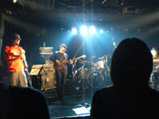
- マヒマヒ (soprano sax)
- 須藤俊明 (drums)
- スズキヒロユキ (bass)
- 岩田ノリヤ (keyboards)
music from the mars
#ザクザクとしたリフが印象的なんですけど、実は七拍子の曲とかだったりしました。（しばらく変拍子な事に気付かなかった）
エレピの人が急にクラシカルなフレーズをひいたりとかしてて面白かった。
これでもーちょい歌メロが印象に残るとイイと思うんですけど・・・・
- 藤井友信 (guitars,vocals)
- 吉村祐司 (drums)
- 大野慎太郎 (bass)
- 坂井キヨオシ (piano)
NATSUMEN
#で、今日の目当てはmsnじゃなくて、実はこっちなのです。AxSxEさんのBOaTの後継バンドのようなインストバンド。
キーボードのEigoってのはPanic Smileの石橋英子さんです。他は良く知らないのですけど、ベースはRUNTSTAR（ギターポップだっけな？）の人みたい。
えーとハードコアかロックかポストロックかプログレかエモか・・・もしくはその全部か。
曲の構造は結構難解。変なブレイクとか、不協和音とか色々、でもテーマはとても印象的なメロディー。轟音のギターリフが一瞬止んでフルートとアコギの繊細なパートが入ったりとか、ギターリフの裏のキーボードのシーケンスがとても格好よかったり、フルート＋クラリネットのパートは一瞬チェンバーロックを思わせるような瞬間もあったりとか。
このバンドがポストロックかどーか知らないですけど、「ポストロック」とかで括られてる音に感じてた不満を吹き飛ばすような音でした。やっぱりロックってのはこーじゃないととか思ったり思わなかったり。
自分の期待値の数倍良かったライヴなんてそう滅多に有るわけじゃないんですけど（このバンドは予備知識あんまり無かったから余計）
シビレルっていう昔の漫画みたいな言葉が出てきそーな感じ。
んでも、こんなに格好イイのに、あんまり音源をリリースしてないみたい。何かオムニバスにちょっとずつ入ってるみたいだけど・・・正式音源が早くリリースされることを祈ります。
そしてそれまではライヴで、12/14高田馬場PHASE,12/31秋葉原GOODMAN。
→http://boat.d4k.net/
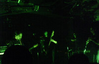
- AxSxE (guitars)
- Aine (miming guitar)
- Yashyro (acoustic guitar)
- Eigo (keyboards,xylophone,flute)
- Maseeta (drums)
- Shige (bass)
- Izu (clarinet)
sugar plant
#えーと実はコレの最初だけちょっと見て帰っちゃったのですが（仕事が残ってたの）
Klaus Schulzeみたいな感じのシンセ＋アンビエントなエレピ＋Manuel Gottschingにしか聴こえないギター＋ちょっと落ち着いた感じの女性ボーカル。っていう音でした、Ash Ra TempelのStarring Rosiみたいだなぁ（あんなにサイケじゃないけど）とか何とか、ちょっと聴いただけなので。すんません、でもこの前のNATSUMENのインパクトがデカ過ぎて。
#随分前から
SAKEROCK見たいと思ってたんだ、ついでに
円盤にも行ってみたいと思ってたんだ。
そんな訳でウツボさんと高円寺で待ち合わせて、円盤へ。一回通り過ぎたけど、ちゃんと戻って来れました。開場待ちしてたら、SAKEROCKのお客さんが結構集まってきました、自分が普段行くライブとは全く逆の男女構成を持つ客層に少々ビビりつつも。（ちなみに大体いつも男:女 = 9.5:0.5くらい）
まず最初は
浜野謙太カルテット・・・カルテットっつーか・・・編成は浜野謙太 (vocals,MD) 以上。
ポータブルのMDのリモコンを操作しながら、ヘロヘロと歌い上げる。歌ったらストップボタンだ「ピッ」以上。
それでアレだ、よーやくSAKEROCKなんですけど。CD聴いたときの「絶対ライブで見たら楽しいだろーな」という印象を更に上回るような楽しいステージ。ライヴ見てからこのバンドがとても上手い事によーやく気付きました、特にギターのちょっと癖の有るバッキングが、少し緊張感を高めてて良かったなぁ。
ドラムは円盤のスペースの関係で、バスドラ無しのハイハットとシンバル一枚とカウベルだけの編成。んでも全然不足感なかったな、KILLING FLOORのドラムでも有るんですね。メンバー全員絶妙のバランス感覚を持った演奏。
えーと途中で休憩挟んで、日東色素っていうギターを持ったお笑いデュオが登場。とりあえず詳述は避けますけど、一番笑い取れるネタがモーニング娘。ってのはどーなんだろう？
で、SAKEROCK第二部。曲名とかちょっと分からない（自分は極端に曲の名前を覚えられない人間で、最近は特にそれが顕著）んだけど、
CDからは「新巻鮭」とか「モー」とか「ベラマッチャ」とか「七七日」やってたかな。
曲の良さは改めて言うまでも無いんですけど、このメンバーの出す音の人懐っこい感じが・・・とにかく素晴らしいです。アホ愉快グルーヴっつうか、もう。（ちなみに写真はアレな感じの浜野様、マズかったら速やかに消しますので言ってください）
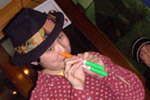
- 星野源 (guitars)
- 伊藤大地 (drums)
- 田中馨 (bass)
- 浜野謙太 (trombone)
#えとえと、これは
Giulietta Machineのライヴではないのですが、メンバーは一緒です。
前々から（UBiKの頃）から見たいなーとか思ってたんですけど、あんまり沢山ライヴをやる方では無いので今までずっと見れずにいたのです。
ちなみに、えとうなおこさんは最近だと大友良英blue bandとかNOVO TONOとか、昔だとUBiK(NaO2)とかSunset Kidsで活動されてた方。自分はこの人の曲がちょっと（かなり）好きなのです。
そんな訳で、satomilkさんとかとアケタの店に行ってきました。大津さんのPowerBookからエフェクト音に乗っかる柔らかな感じのゆっくりとしたピアノの曲。こーゆーのを聴きたかったのです。（大友さんのバンドとかだと、あんまり前面に出てくること少ないし）
曲によっても振れ幅大きいんですけど、エレクトロニカとも似たような/違うような不思議な音、大津さんの曲なんかはちょっとボサノバのようでも有り、アンビエントみたいな音にも聴こえるし。んでもMUMとか好きな人とかに受けそうな感じもするんですけど、どうなんでしょうか？
ラストにはGiulietta Machineのアルバムの「Tudo」（シンセのループは生ピアノでやってました、かなり無茶な感じで）
やはりCDよりもナマの方が全然良かったです。この日は告知も少なかったせいか客少なかったですけど、もっと頻繁にライヴやってほしいなーと思いました。
→Giulietta Machine
- えとうなおこ (piano,synthesizer,vocals)
- 大津誠 (guitars,computer)
- 藤井信雄 (drums)
#んで、ポセイドンフェス2日目の昼の部。夜はKBBとか有ったんだけど、用事があったのでパス。
F.H.C.
#stickとkeyboardとcontrabassのフレーズを重ね合わせて曲が進行してって、あっさり終わるような曲が多かったかな？「起承転結」の「起承転」で終わるよーな感じ。スティックが80年代クリムゾンみたいな音出して、キーボード（MS-2000だった）はちょっと叙景的な感じのフレーズ。シンセの音色をビミョーに変えながらフレーズ弾いてく感じとか面白かった。
インパクト有るような曲では無いんですけど、不思議に面白い感じ。VITALのサンプラーに収録されてる曲ではドラム入りなんですけど、いかにもな感じのドラム入りの編成よりも、今回のライヴでの編成の方が面白いように思いました。
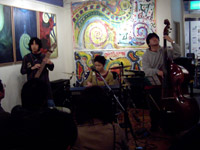
→F.H.C.のサイト
- かさいあつし (stick)
- ルミ (keyboards)
- 安藤邦博 (contrabass)
モーソフ
#こないだも見てるんですけど、モーソフです。今回は人数少なかったせいか、会場のせいか、前回ちょっと感じたゴチャゴチャした感じが無かったです。リラックスした感じでイイ。
前回アコピだった金澤さんは今回はキーボード+ワウで、かなりMike Ratledgeな音になってました。今日は流石にボーカル無いかなと思ってたんですけど、ラス曲で福島さんにマイクを渡されて「ブキャー」とかやってました。
「３」～「５」くらいのソフトマシーンみたいな感じの音。こないだ見たソフトワークスよりイイでないかと。
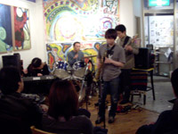
→モーソフのサイト
- 福島幹夫 (sax)
- 内田典文 (bass)
- 沢田守秀 (drums)
- 金澤美也子 (keyboards,voice)
POSEIDON RECORD主催のポセイドン祭り。一日目の江古田BUDDYでは、超久々のおUと壷井+鬼怒デュオ。とにかくおUが見たくて、会社を定時で脱出。
壷井彰久+鬼怒無月
#えーとこの組み合わせで見るのは初めてかな、「Era」ってCDをPOSEIDONで出してます。壷井さんの弾くフレーズはどーしてもプログレ、鬼怒さんの参加してる数多いグループの中でも一番いわゆるプログレに近い音だと思います。アコギとバイオリンだけなのに二人の手数の多いこと。「Crawler-A」とかやってました。
そして、凄まじくかみ合わないMC。これがプログレ。
→壷井さんのサイト内、壷井/鬼怒Duoのページ
- 壷井彰久 (violin)
- 鬼怒無月 (guitars)
おU
#８年ぶり！！！
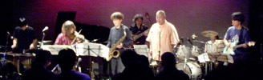
もー、このメンツが一つのステージで一緒に演奏するってだけで嬉しいです。全員ファンみたいなモノですから。
一人一人の音がとても癖の強いまま、きっちりアンサンブルとして成立ってるってのが凄かったですね。矢口さんのサックスはやっぱりReal FishやFishermen tit totで聴いてたアノ音だし、向島さんのバイオリンもSOLAとかで聴いた艶やかな感じで、今堀さんのギターは今堀さんでしかない音だし、久々に聴いたれいちさんのドラムも相変わらずタメの効いた感じで。
そんな訳で最初は定番「Blivits」（
KILLING TIME/BILL、
おUに収録）おUのアルバムに近い感じの演奏です。「若者もどき」は清水+今堀+れいちのトリオでの演奏、なにやら音源をバックにしたスピード感の有る演奏で確かに若者っぽいのかも。
「タンゴもどき」は
2000.6.4 清水一登+向島ゆり子+今堀恒雄 @ 大泉学園 in Fで一回だけ聴いた曲です。他でやった事あるのかな？この「タンゴもどき」から「収容所」（
KILLING TIME/SKIPのOne for Each Sentiment）へ続けて一部終了。収容所後半はとてもテンションの高い演奏、あんなに気合の入った「収容所」を聴くのは久々。
休憩をはさんで最初は清水さん1人での演奏。相変わらずミョーな音源を重ねていってピアノソロ、随分前の新宿ロフトプラスワンでの清水ソロを思い出しました。
そしてメンバーがゾロゾロ出てきて「Minerals～Tasmania」を演奏。
オパビニアでも聴けますけど、やっぱり当たり前ですけど全然印象の違う感じで。
「Gymnesia」（
yet somehow...収録）では清水さんxylophoneの演奏、この曲聴くのはほんとに8年ぶりかも。「Johnson Blues」と続けて、ラス曲はやっぱり「Habanerege」ボーカルの所を向島さんが入り損ねてたけど、相変わらず無茶なこの曲をビシッと演奏するのはやっぱりこのメンツならではかも。
アンコールでは「Epistrophy/Variation」をソロ回し付きでやってくれました。れいちさんは何故か「Habanerege」のボーカルパートを歌ってたり。
MCで清水さんが「久しぶりにみんなで集まって演奏して、やっぱりみんなで演奏してる感じだなー」とか言ってました。その言葉に尽きるような気がします。「これからは一年に一回くらいはやりたい～」との言葉を信じて次回を待つことに。
- Blivits
- Epistrophy/Variation
- Waltz #4
- 若者もどき
- Contrarily
- タンゴもどき
- 収容所 (One For Each Sentiment)
- （清水一登ソロインプロ）
- Minerals
- Tasmania
- Gymnesia
- Johnson Blues
- Habanerege
- Epistrophy/Variation (アンコール)
- 清水一登 (piano,keyboards,bass clarinet,xylophone)
- 向島ゆり子 (violin)
- 渡辺等 (bass,11-strings fretless guitar)
- 矢口博康 (soprano sax,alto sax,baritone sax)
- 松本治 (trombone,tuba)
- 今堀恒雄 (guitars)
- れいち (drums)
#えーと1つめは、「る*しろう」のドラム、菅沼道昭さんも参加しているCOOL TONE THYTHMってバンド。
キレイめのジャズロックなんですけど、時々何でもなさそーな普通のパートに菅沼さんの凄まじいフィルインが挿入されてて可笑しかった。
途中から山田ミナさんって方がピアノで入って、片桐さんがピアニカに変えて演奏してるのが良かったです。ちょっとファンキーで可愛い感じのジャズロックみたいな。でもドラムが突然両手でフロアタムを叩きだしたりするんですけど。
COOL TONE RHYTHM
- 片桐久尚 (piano,pianica)
- 菅沼道昭 (drums)
- 田嶋真佐雄 (contrabass)
- 岡田光司 (sax)
- 山田ミナ (piano)
金澤美也子+荻野和夫
#んでポチャカイテマルコの荻野さんと、美也子さんとのデュオ。一曲目はポチャカイテのアルバムから「Ukraine」を演奏。
ピアノ2台っつーことで、なんだか聴いててBlue Motion（スイスのプログレバンド）を思い出しちゃいました。鍵盤楽器×２のフレーズが交錯して、１つ１つフレーズとは別のモノになってくよーな感じが面白い。こっちからだと金澤美也子さんの背中しか見えないので、どんな顔して演奏してるのか見えないのがちょっと残念だったんだけど。
後はバルトークの曲とか、荻野さんの曲とかを交えつつ。この日一番印象に残ったのが、中盤にやった「路地裏#1」って曲。映画のサントラのようなトラッドのような、ちょっと懐かしいようなメロディーを持つ曲でした。この日のデュオの中ではちょっと異色な感じでしたけど、また聴きたいな。
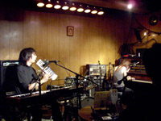
- 金澤美也子 (piano,voice)
- 荻野和夫 (keyboards)
モーソフ
#んで、最後ががモーソフ（モーニングマシーン＆ソフト娘。）ネーミングセンスに疑問を差し挟むのは置いといて、アヴァン系のジャズロック（っていってイイのかな）最初に思ったのはやっぱりDoctor NerveとかX-Legged Sallyとかあの辺の音。
この日はゲストにる*しろうの金澤さんと井筒さんを迎えての5人での演奏。ちょっとベースのループとエフェクトがうるさくって、他の音とのバランスが悪かったよーな気もします。
あとで
CD聴いてみたけど、やっぱりこの日はちょっとバランス悪かったんじゃないかなとか。
それでもソフトマシーンみたいなベースフレーズに勢いの有るサックスが入る瞬間とかはスカッとするよな感じで。途中で美也子さんの謎ボイスとかも炸裂してました。
今度の
ポセイドン祭りでは500円でまた見れるみたいなんで、行ってきたいと思います。
- 福島幹夫 (sax)
- 内田典文 (bass)
- 沢田守秀 (drums)
- 金澤美也子 (piano,voice)
- 井筒好治 (guitars)
そんな感じでして、色々見れて楽しかったです。「vol.1」って事は2回目も有るだろうと、期待して待つことにします。
あとですね、「る*しろう」のアルバムがTUTINOKOレーベルから来年に出るらしいです。超期待。きっと面白いのでみんな買いましょう。
#あーもー書かなかったら大分忘れてるけど思い出して書こう。
イルリメ
#バナナの皮で滑って転ぶのが良く似合いそーな人でした。はしゃぎ回りのヘンテコラップ。っていうか
COMBO PIANO
#えーと・・・とてもセンスはイイ人なんだと思うんですけどねぇ・・・やりたい事が散らばってまとまりつかない感じ。（ライヴだと）
SHINTO
#事前には「ドイツ人らしい」という情報しか無かったのです。ドイツ人の二人組。
とりあえず、
SHITOオフィシャルサイトを見て歌詞見て頂ければイイのですけど・・・ラップトップ+ベース（つまり音担当）のハンスと、歌担当のカミ・トクジローってのの二人組です。
エレクトロっぽいトラックが流れだしたなーとか思ったら、そのカミトクジローが演歌のような昔の歌謡曲みたいな
日本語で朗々と歌いだしたときのインパクトは筆舌に尽くし難いです。
ちょっと違うけど、三橋美香子を最初に見たときのインパクトに近いものを感じました。最近この番組、反則技続きですけど（とん平＆ビショップとか）コレは流石に殺人魔球なんじゃないかと。
SPANK HAPPY
で、トリがSPANK HAPPY。俺が最後に見たのが
2001.3.10のCLUB ASIAだから、もー2年半ぶりに見ることになります。久々に見た岩澤瞳さんは顔が小さくなってました。
曲は今年末発売の2ndの曲らしく、1曲目とかはノンスタンダード時代の細野晴臣みたいな感じかな？基本線は変わらずトラックのクオリティーは相変わらず（ていうかほとんど当てふりだったからCDのままかも）、自分にはなんだか菊地成孔の書くポップス曲のエロい部分が若干薄くなったよーに思いました。
ま、その、イイかどうかはアルバム出るまで保留しようかなと。
#
ROUND HOUSEの復活後の東京では2回目のライヴになります。
高校の頃にMADE IN JAPAN RECORDから出てた
人造人間って言うアルバムに入っている「水車小屋の朝」って曲がとっても好きになって。前回のライヴでは演奏しなかったその曲を今回は聴くことが出来ました。15分くらい有る曲ですけど、なんかメロディーと曲展開がとても好きで。
最近自分が良くライヴに行くバンドとはちょっと系統が違うのかも（どっちにしろプログレ系だけど）知れないですけど、どーもこのバンドのギター2本が、何度かずらしてサビを弾くのがとても格好良くって。
このバンドは「ジャズロック」って言っちゃうと、ちょっと違うよな気がしてます。なんつかインストで歌を聴かせるような感じの、サビのメロディー覚えちゃうような感じの不思議なインストっていうか。やっぱり曲かな？複雑な曲展開でもビジュアルな感じで良く考えられてるんだと思います。
あ、あとこの日は加藤さんのMCが可笑しかった・・・天然っていうか・・・（こんな事書いたらマズイかな）・・・演奏とのギャップが。(2003.10.24)
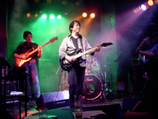
- スーパーワープ
- 祈り
- 赤い薔薇と悪魔の囁き
- スフィンクスの涙
- ロマンティックラリー
- 切なき思い（アンバーレイン）
- 水車小屋の朝2003
- ソフティーミスト
- エンドレスリープ
- 人造人間
- 華麗なる危険人物
- 最後の判決（アンコール）
- 加藤正之 (guitars)
- 上村義昭 (bass)
- 名取寛 (drums)
- 田村励武 (guitars)
- 片岡祥典 (keyboards)
#チェコのUz Jsme Doma（「ウシュ・スマイ・ドマ」と読むらしいです）の来日公演。何だかよく分からないけど行ってきました。
んで、対バンが鬼怒無月さんのWarehouse。久々に見ましたけど、とても緻密な感じになってました。パッと聴いた印象だとカフェとかでかかってそうな柔らかな感じの音なんだけど、よく聴くととても複雑。ビブラフォンの複雑なループに、R.Frippみたいなギターが入ったりとかしてて。
何でも2ndの録音が済んで、できれば年内にリリースするとか言う話。曲のタイトルは決まったけど、アルバムタイトルが決まってないって話で、「何にしようか？」ってのに鬼怒さんが「たこ焼き」「たこ焼きとふんどし」とか・・・確実に売上枚数が減ります。
- 鬼怒無月 (guitars,hi-hat)
- 高良久美子 (vibraphone,percussions)
- 大坪寛彦 (bass)
#それで片付け終わったら、Uz Jsme Domaのメンバー登場・・・ヘンな衣装（後で気付いたけど、ドリフの合唱のコントにそっくりな衣装）
サックスの人がギターになっていたためか、
来日元のあおりに有った「渋さ」ってのはちょっと違うかなってサウンドでした。むしろ筋肉少女帯とかナゴムとかっぽい印象。（サンボマスターにも似てるような気もしたんだけど、知らないよね）
とにかくせわしないバンドで、とっ散らかった部屋の中でサッカーしてるみたいな感じ。特に可笑しかったのがドラムで、手首のスナップを全く効かせないでハイハットを「チチチチチチチチチ」と叩くのが面白くて。時々ロールとか使ってたんで、わざとそんな感じに演奏してたんでしょうけど、見てるこっちまで疲れるような演奏。
後はヘッポコの名に恥じないついこないだ買ってきたみたいなペナペナなギターとか、とにかくバキバキ言うベースとか、芸風幅広いバカボーカルとか。レコメン系と言われればそんなような気もするけど、知的な感じはゼロです。（少なくともライヴは）
あ、ちなみに演奏中は画家が後ろで空飛ぶニンジンの絵を描いてる。デタラメの一歩向こうの世界を垣間見たよーな気がしました。素晴らしい
馬鹿バンド、面白かった。（しかしよく横浜ジャズプロムナードに出たよな）
- Radek Podvesky (guitars,vocals)
- Petr Bohm (drums,vocals)
- Miroslav Wanek (guitars,keyboard,vocal)
- Milos Albrecht (bass,vocals)
- Martin Velisek (painting)
#えーとDCPRGを見るのは実は久しぶり。大友良英抜けてからぜーんぜん見てなかった、したがって新曲群も（CDは買ったけど）まだ生で見たことは無かったのです。そんな訳で、新曲期待で行ってきました。
セットリストは、
エスロピIIさまを参考に書きました。構造が2だか3だかわからんかったので。
ウツボさんも書いてたよーに、アイアンマウンテン定食に構造をふりかけたよーな構成。アイアンマウンテンの頃の曲に較べると構造の曲ってポリリズムってーか重層的な感じの曲が多いので、この構成の中でのアイアンマウンテンの曲はとかちょっと野暮ったく聴こえてしまうよーな気もします。
「Hey Joe」はなんだか出力75%で抑えたような演奏、中型戦車が街中走ってるよーな感じの。「Playmate at Hanoi」はちょっと新譜発売記念としては余計かな。
「構造と力」の曲群はやっぱ異常ですねー、「構造-3」とかはどーやってノればいいのかわかんない感じ。「Catch 22」の並走するグルーヴって方法を利用して曲を組み立てたような印象を持ってます。よく演奏するよな、あんなの。（客もこんな沢山よく来るよな）
長い長い長いMCを挟んで、ラス曲は「構造-5」この曲が聴きたかったんです。そして（個人的には）この曲が一番でした。こーゆー展開有るような曲が好きなのは、たぶん自分にプログレの血が流れてるからだと思います。
アンコールでは「構造-5」CDで聴いたときにはあんまり気になるような曲では無かったんですけど、物凄く綺麗な曲でした。できればコレで終わりにして欲しかったんですけど、2回目のアンコールに答えて「Mirror Balls」まぁ、オマケだと思っておきます。（大好きな曲だし）
3時間近い演奏だったけど、そんなに時間が経ったよーな気はしてませんでした。（おかげでその後ちょっと飲んで、終電逃した）
あーそうそう、新加入のJason Shalton。ギターソロになるとスポットが当たるでしょ、頭がピカピカしてて笑った。昔近鉄に居た佐野ってピッチャーのピッカリ投法（投球モーションに入って腕を振りかぶると、帽子が後ろに落ちてハゲ頭が光って、打者が一瞬ひるむと言う伝説の投法）を思い出しました。
（しかし、本当に新加入のホーンセクション要るのだろうか？）
- Catch 22
- 構造-1
- Hey Joe
- Playmate at Hanoi
- 構造-2
- Stain Alive
- 構造-3
- Circle/Line～最後の平和を我らに
- 構造-5
- 構造-4 (アンコール)
- Mirror Balls (アンコール2)
- 菊地成孔 (keyboards,CD-J)
- 坪口昌恭 (keyboards)
- 芳垣安洋 (drums)
- 藤井信夫 (drums)
- Jason Shalton (guitars)
- 高井康生 (guitars)
- 栗原正己 (bass)
- 津上研太 (soprano sax)
- 後関好宏 (tenor sax)
- 大儀見元 (percussions)
- 吉見征樹 (tabla)
- 関島岳郎 (tuba)
- 青木タイセイ (trombone)
- 佐々木史郎 (trumpet)
#佳村萠さん、今回は坂本弘道さん（シノラマ,シカラムータ,SOLA・・・などなど）と松永孝義さん（MUTE BEAT,Ring Links,カルメンマキ&サラマンドラ）を迎えてのライヴです。以前下北沢で鬼怒無月さん勝井祐二さんと演奏したヤツのメンバーを変えたような感じです。
1曲目はほとらぴからっの「カメレオン・パーティ」声以外の楽器が、cello+bassという低音ばかりな編成ですけど、坂本弘道さんのすばらしいギミックの数々であちこちから色んな音が出てきます。
その次が何とRobert Wyatt/Elvis Costelloの「Shipbuilding」（坂本弘道さんの選曲とか）まーさかこんな曲が聴けるとは思わなかった。ちなみに一部ではその後Brian Eno/By This River(Before And After Science収録)まで演奏されてました。
ちなみに「夜とみみずく」は
シノラマ/3つのウソと5時の鐘に入っている坂本弘道さんの曲。ライヴは見たことなかったんだけどシノラマは大好きで。まさかこの曲を聴けるとは・・・と言った感じ。
二部の頭では「またシノラマ？」というベースラインでしたけど、これはシノラマの曲に外間隆史さんの詩を乗っけたモノ。坂本弘道さんのノコギリ演奏が気持ちイイです。
今まで坂本弘道さんを見たのはシカラムータとかSOLAの時ばかりだったので、こんな感じでじっくり坂本さんの音を聴くのは初めてでした。それでこれが物凄く面白い音を沢山出していて。チェロのまわりにはエフェクター類とかカオスパッドとかが置いてあって、一人でTangerine Dream/Zeitみたいな音出したりとか、エレクトロニカみたいな音響を出したりとか。うーん、こんなに面白いとは思わなかった。こんどソロを買ってみよう。
松永孝義さんは流石の演奏、一人だけでゆったりとしたリズムを作りだしてました。松永さんのベースの上を坂本さんのチェロ（とか）と佳村さんの声がフワフワ浮かんだり沈んだりするような感じ。
歌もイイんですけど、とくに朗読してるのが凄く好きです。佳村さんの声にフキダシ付けるとしたら、絶対に
淡いピンクで色を付けると思います。そんな色彩感とちょっとストーリーの有る音+朗読。この朗読でCDとか作ってくれないかなぁー。
あ、
えむさんのサイトの
ここに写真付きでレポートが有りますね。(2003.10.10)
- カメレオン・パーティ (ほとらぴからっ)
- Shipbuilding (Robert Wyatt)
- ?? (朗読)
- 初恋のあとのあと (ほとらぴからっ)
- 夜とみみずく (シノラマ)
- By This River (Brian Eno)
- ? (シノラマの曲に外間隆史の詩)
- ? (外間隆史の曲)
- ???
- うさぎの短い詩
- うさぎのくらし
- Hallelujah (Leonard Cohen)
- 佳村萠 (vocals,voice)
- 坂本弘道 (cello,musical saw)
- 松永孝義 (wood bass)
#仙波清彦を見るのは久しぶり、ちょっとメンツが面白そーだったので行ってきました。
「曲やるかな～」とか思ってたんですけど、全部インプロ。1st setとかは何だか
大人のインプロみたいな感じでちょっと落ち着いた感じの音でした。実は1st setの後半からちょっと寝ちゃったんで良く覚えて無い・・・（スマン）
2nd set頭では坂田明さんが持ってきた何とかと言うクラシックの作曲家の曲を、メジャーだかマイナーだか分からない不思議な曲でした。
バカボン鈴木さんは2nd setからスティックに持ち替えての演奏。コレが非常にかっこいい、非常にクール。80年代クリムゾンみたいなスティックのフレーズの上で、清水一登さんがちょっとテクノポップっぽいフレーズを弾いて、坂田明がサックスをブキョーって吹きまくるパートは、この日一番の見所でした。
ちなみに何だか変な音が出てるなぁと思うと、だいたい浦山さんがギターで音をだしてました。変わった人だなぁ。
仙波清彦のドラムソロとかも、色んな打楽器を交えて面白かったんですけど・・・その昨日のチャールズヘイワードのドラムが脳裏から離れずに・・・ちょっと印象薄かったかも。
- 仙波清彦 (drums,percussions)
- 坂田明 (sax)
- 清水一登 (keyboards)
- バカボン鈴木 (bass,stick)
- 浦山秀彦 (guitars)
- 高橋香織 (violin)
#ちょっと行くかどうか金銭面で悩んでたんですけど、結局行ってきました。元this heatなんて今更言う必要ないかな？Charles Hayward3回目の来日です。
表参道FABに入った時に、客席見て唖然としました。
客席のど真ん中にドラムセット、それをぐるりと取り囲むように椅子。こんなセット見たこと無いです。
演奏は前回に見たときよりも更に鬼気迫る感じ、ドラムセットの右後ろから見ていたんですけど、左足でカセットテープの操作をしながら右手も左手も鬼のように動いてます。そして歌、チャールズヘイワードのボーカルを何て書いていいのか良くわからないんですけど、素朴な感じのメロディーを力強く歌い上げていくような・・・感動的と言ってもいいよな感じの歌でした。
なんつーか、ほんと来て良かったよなと思います。あの圧倒的なインパクトは自分じゃどーしても文字にできないんですけど、改めて生でライヴを見ることの大切さを知ったような気がします。
- Charles Hayward (drums,voice,tapes)
#吉田達也叩きまくりイベント、「変拍子で踊ろう」に行ってきました。もう9回目になるこのイベント、今日はほんとにドラムは吉田達也一人です。
開場時間ギリギリに吉祥寺STAR PINE'S CAFEに行くと「本日、佐々木恒の出演は有りません」との張り紙。ってーかRUINSどーすんだ？という事と、他の面白いモノが見れるかも！というミョーな期待を。
そいえば、友達のバンドのギターの人が来てたなぁ。
是巨人
#一個目は、是巨人。自分が見るのは
2000年の9月以来。というかあんまりライヴやってないですけど。
1曲目は新曲、鬼怒さんが同じループを弾き続けて、ドラムとベースはちょっとずらした所に入れたりするような感じの曲。面白い。
後はアルバムの曲とか、前のライヴでやった鬼怒るさんがボーカルを取る曲とかを演奏しました。アルバムに入ってない新しい曲の方が安定してるよな感じかな。
鬼怒さんがあんまり弾きまくるパートはこのバンドだとあんまり面白く思えませんでした（他のパートも一緒に崩しちゃうよーな感じなので・・・）、もっとガチガチに譜面書いてキッチリ演奏するのを聴いてみたいなぁ。
- 吉田達也 (drums)
- 鬼怒無月 (guitars)
- ナスノミツル (bass)
吉田達也+CDプレイヤー
#で、RUINSだったハズが佐々木さん欠席（なんかケガしてるらしい）の為、急遽CDに合わせてRUINSの曲を吉田達也一人でやる事となりました。
ドラムセットの横にCDプレイヤーを置いて叩くので、音が飛んで非常にズレます。っていうか音飛んでなくてもズレてるよーな気が（普段いかに無理矢理合わせてるかという事が良く分かった）
ま、可笑しかったからイイや。吉田達也さんはなんだかセブンイレブンの98円の紙パック麦茶（烏龍茶かも）とか飲んでます。
吉田達也+金澤美也子
#急遽穴埋め、vol.2。っていうか「佐々木恒欠席」の時にかすかに期待したのはこの組み合わせなんです。「る*しろう」の金澤美也子さんとのデュオでのRUINS曲。「クラシックメドレー」とかは（いつもはベースで弾いてるけど）この編成だとほんとにクラシックに聴こえます。
編成変えただけでこんなに変わるのかと言うほど、RUINSっぽくなくってプログレに聴こえます。このデュオはもーちょい曲数増やしてまた聴いてみたいなぁと。
高円寺百景
#高円寺百景ではキーボードに「る*しろう」の金澤美也子さんと、ボーカルに山本響子さんを加えての新編成。
コレがまたなんつーか強力っつーか、凶力っつーか、狂力っつーか。
金澤美也子さんは「る*しろう」で見て一発で好きになって期待してたんですけど、演奏も顔も表情豊かに。やっぱこの人サイコーだわ。山本響子さんは初めて名前を聴いたんですけど、オペラチックな良く伸びる迫力有る高い声。ものすごく高円寺百景に適役な感時でした。（ついでに2人とも可愛いってのがイイよな）
曲目はたぶん↓みたいな感じだったと思う。アンコールでは1枚目1曲目の「IOSS」を途中から演奏、久々に聴いたけどスゴイ。何曲目だったか忘れたけど、金澤美也子さんがテンション高くなりすぎてキーボード叩きすぎ、しばらく「ピー」とか言ってました。可笑しかった。
ギターの佐々木さんの不在でちょっと音圧物足りない部分も有りましたけど、その分キーボードとボーカルが全面に出てきて聴きやすかったです。ベースの坂元さんは現在沖縄在住だそうであんまりライヴできなさそーですけど、この編成でこの音なら佐々木さんベースで高円寺百景やって欲しいなーとか。
- VISSQAUELL
- BECTTEM POLT
- NIVRAYM
- ?
- MEDERRO PASSQUIRR
- ?
- SUNNA ZARIOKI
- GUOTH DAHHA
- IOSS (後半のみ)
- 吉田達也 (drums,vocals)
- 坂元健吾 (bass,vocals)
- 金澤美也子 (keyboards,vocals)
- 山本響子 (vocals)
#4日前のAbu Dhabiも合わせてなんだか変態音楽祭りが続いてる感じ。特に高円寺百景はカッチョ良かったなぁぁ。客も結構入っていて良かったと思います。徐々に日本の変態音楽好きの人口が増えているのかしら。
ASA-CHANG & 巡礼
#トップバッター。
たぶん自分が見たのは3年前くらいのROVOの頃、久々です。っていうか前こんなタブラの人居たっけな？
一曲目はBrigette Fontaineの「ラジオのように」。中央にジュンレイトロニクスと呼ばれる謎の機械の発光ダイオードが輝く中、ゆっくりと盛り上がっていきます。
いやーでもタブラの超絶プレイってのを久々に見ました、豊富な音色を凄いスピードで繋いでいくの。ASA-CHANGのパーカッションと合わさる瞬間が、格好良かったな。ASA-CHANGの方は音数はそんなに多くないんだけど、ツボを得たようなタイミングの。
久々に聴いたんですけど、物凄く計算されたよーな音に感じました。一音一音キッチリ意味を持って積み重ねていくような。
ちなみに
ASA-CHANG & 巡礼 Official Web Siteでジュンレイトロニクスの姿が確認できます。とりあえずリンクを辿ったら「NOW」って所クリックしてみて下さい、俺は激しく笑いました。
- ラジオのように
- 二月
- つぎねぷと言ってみた
- 海峡
- 花
- ASA-CHANG (percussions,trumpet)
- U-ZHAAN (tabla,guitars)
MONG-HANG
#このバンドは初めて見ました。ベースの人が見た目も気持ち悪いし、動きも気持ち悪くて最高です。
後ろの方で見てて分からなかったんですけど、bass+guitar+vocals+percussion+drums+percussionの六人編成かな？なんつーか皆ヘンな衣装着てます、某電波団体みたいな白装束とか。まぁその詳しくは
オフィシャルサイト見てよ。
なんつーか一瞬先の展開も予測できないよーな、変な曲。格好良くなってきたと思ったら、すぐ「ズキョー」って崩壊してって、それでもまだ終わらない～の繰り返しな感じ。
キチガイみたいなバンドだけど、演奏は上手いし、トライバルなパートとかかっちょいいんだけどなぁ・・・すぐ崩すんだよなぁ・・・個人的にはちょっとその辺が不満。見た目にも演奏もインパクト有るんだけど、あんま長すぎると飽きるかも。
サイト見るとCD結構出てるみたい、逆にCDがどんなか気になる。
半野田拓+生西康典
#サブリミナルの映像をずーっと見せられてるよな、激しく点滅するVJに、ノイズ～エレクトロみたいな音が乗っかります。
音の方は一聴した感じノイズ部分が多いんですけど、よく聴いてると柔らかい感じのメロディーが聴こえてくるような気も。結構好み。
だがしかしこーゆーVJ苦手なんだす、ボーっと見てたら頭がクラクラしてきました。ピカチュー。
- 半野田拓 (sampler,guitars)
- 生西康典 (VJ)
オパビニア
#よーやくオパビニア。一曲目は新曲、シーケンスっぽいキーボードのフレーズで芳垣さんのドラムと鬼怒さんのギターが疾走するタイプの曲。
MCで「今の曲は・・・」とか喋りだしたんだけど、清水さんは機材の事で頭が一杯らしく話がどっか行っちゃいました。
その後はいつものセットでしたけど、この日はいつもに無いくらいシャープというかカッチリした演奏でした、いつもグシャグシャのインプロに突入する所（それはそれで好きなんだけど）をバッサリ省いて、シャキッと終わる感じで。
なんだか凄い集中力、今まで見た中でもかなり充実した内容でした。なんか「コンブトリ」とかロックでしたよ、ほんと。
- (新曲)
- 情熱の通り雨
- Pre-Cambria Dreamin'
- ふぐ汁
- 最低人 part 2
- コンプトリ
- タスマニア
eksperimentoj
#えーと、マイブラみたいな感じ。guitar×2 + drumsの3人組。
ドラムがイイ音してて良いバンドだなーとか思ったんですけど、時間的にボリューム的に限界、おなか一杯。途中で帰っちゃいました。
#えーとその他の事
西武池袋線の事故の日の清水一登+四家卯大@大泉学園in Fのライヴは有ったそうです（客ほとんど来なかったとか）。あんまりなので10月に再演するとか。
この日は随分色んな人が来てたよーです、「ASA-CHANG & 巡礼で浦山さんは出てないのかー」とか言ってたら、すぐ側に浦山さんが居て焦った。
ちなみにAbu Dhabi ver.02 は12/7、大阪BRIDGEにて。出演はオパビニア,溺れたエビの検死報告書,Conti,半野田拓・・・大阪かぁ。
#毎度お世話になってる
NHK-FMライブビートの公開収録。今回はMOSTととん平＆ビショップ（DMBQの別ユニット）
MOST
まずはMOSTから、PHEWとか山本精一とかのパンクバンド。前見た時は山本精一欠席で代わりに勝井祐二だったのできちんとした編成で見るのはこれが初めて。
やっぱり左右のダブル山本のザクザクしたギターのリフがかっちょいい。パンクなんですけどメンバーがメンバーなので、なんつーか前へ前へ押してくるような迫力がたまらんです。
山本精一のギターもリフ以外の所では、ROVOで聴けるような電波っぽい音が入り混じったりして面白い（シンプルなセットなのに何であんな音が出てくるんだろう？）
- PHEW (vocals)
- 山本精一 (guitars)
- 山本久土 (guitars)
- 西村雄介 (bass)
- 茶谷雅之 (drums)
そんな訳で、NHKなのでモッシュはできないですけど、1時間くらいの演奏。
とん平＆ビショップ
初めて見たわけです。が。
ケミカルウォッシュのジーンズにストリートファイター２のTシャツの裾をしまって、「やぢゅぅ～～」とか叫び続ける某DMBQの人に似たとん平と
似非ミリタリーみたいな格好でカラオケに合わせて時々切ないギターを奏でる某DMBQの人よく似たビショップさんが
延々と、説教を続ける
というモノ。
・・・・・・・・NHK・・・・・・・正気か？・・・・・・狂気の放送は10/8です。
#横川タダヒコさんのデュオ即興シリーズ「TWO OF US」の第62回目（そんなにやってんのかよ！）で今回のお相手は清水一登さんです。
横川さんはギターをメインにPC(VAIO)にChaos Padをくっつけた音源、あと時々バイオリンでの演奏。
清水さんはキーボードに最近良く使ってる、サンプラーみたいな音源、ペンギンハウスのアップライトピアノにバスクラ。
どちらかが主導になって、片方の音に合わせてくよな感じじゃなくって、ほんとに1/2+1/2みたいな音。火花散らして対峙するよーなインプロではなく、一緒の方向に歩いてみたり、逆の方へ行ってみたり、横に曲がってみたり、そんな感じ。
とくに2nd setでの清水さんのピアノのシーケンスに横川さんのバイオリンが乗っかるところとか、そのまんま「曲です」って言われても納得しそーなクオリティ。
- 横川理彦 (guitar,violin,computer)
- 清水一登 (keyboards,piano,bass clarinet)
清水一登さんって昔はインプロをあまりやらないイメージが有ったんですけど、最近はなんかやる度に面白くなってくような感じ。人の出した音に対する反応のスピードとか、きっかけの出し方とか、即興の人たちの中に置いてみても中々独特で面白いです。
#これが何かとゆーと、まだ何かわからないんですけど。
ひょっとするとこれが育ってKILLING TIMEになるかもしれない
Ma*Toさんの（でイイのかな？）KIDDING TIME。初ライヴ（どーもその前に学芸大学CHAOSでやってたみたいだけど）
場所は新木場のAGEHAっていうでっかいクラブ。マジでっかい、あんな所初めて行った。
スピーカーに取り囲まれた馬鹿でかいフロアが有って、その外にアンビエント用のテントとプールとか有るの。
でKIDDING TIMEのライヴはそのアンビエント用テントにて3:00amから。
- Ma*To (keyboards)
- Whacho (percussions)
- 青山純 (drums)
- RA (guitars)
- 小滝満 (keyboards)
- ? (computer)
- ?? (turntable)
#最初はKILLING TIMEの「KO KO RO WA」をturntableで流しながら、その上にちょっとずつ音を足していくような感じで。
次第に四つ打ちミニマルテクノみたいな感じになってきます、青山純さまとWhachoのパーカッションの掛け合いが面白い感じ。RAさんのギターが「グキャー」って入ってる所とか、一瞬system7を思わせるような音。
今回はとりあえずお披露目って事で、このユニットがどーなって行くかはわかりませんけど。とにかく自分はこの人たちの音が好きなので、また追っかけていこーと思います。
CONVEX LEVEL
#Robin disc(福岡知彦さんのレーベル)からEPが何枚か出てるくらいの事しか知らなかったです。えーとプログレとギターポップを折衷したような3ピースバンド。
なんだか最後の方でホールトーン（全音階）＋7拍子っていう、非常にわかりやすいプログレインストが有って可笑しかったです。その他は結構ビミョーで、複雑な曲展開のバンドとラウドなギターバンドを行ったり来たりな感じでした。
あとMCが変、っていうかアマチュアバンドみたいなMC。むしろ喋らない方がかっこいいのでは。
大友良英 blue band
#えーと、あんまりライヴをやってないこのバンドの音が公共の電波に乗るなんて思わなかったです。
内容は
以前CAYでやったヤツの縮小版みたいな感じで、どーにも大友さんの映画音楽好きとしては結構たまらない感じ。「painting」では三拍子パーカッションチームとか言って、素人な方々がステージへ上がって色々な打楽器を叩いてました（大友さん何故かノリノリ）
この日は結構前で見れたので、久々にえとうなおこさんの御姿もきっちり見ることが出来て嬉しかったです。（コノ人の音も好き）
魚喃さんの叩くプリミティブな感じのボンボが、アヴァンギャルド系の演奏者達の雰囲気を少し違うモノにしてて良かったです。存在が他の人たちに与える影響っていうか、この人が居るのと居ないのでは、随分印象が違うんじゃないかなと思いました。（第一、可愛いし）
- blue
- ピアス
- アイデン・ティティ
- スタント・ウーマン
- painting
- the sea
- 大友良英 (guitars)
- えとうなおこ (keyboards)
- 芳垣安洋 (drums,percussions)
- 西村雄介 (bass)
- 栗原正己 (recorder)
- 魚喃キリコ (percussion)
#えーとSOFT MACHINEの歴代の面々からテキトーにチョイスしたような（マネージャーが作ったバンドらしい）メンバーですが、とりあえず見に行ってみました。
マターリとしたジャズロックでした。Elton Deanがエレピ弾くたびに「やっぱり鍵盤奏者（≒Mike Ratledge）が欲しいな～」などと思いつつ。
新譜買ってないんで、セットリストは分かりません。ゴメンなさい。SOFTSの曲でやったのは「Kings and Queens(4th)」「Facelift(3rd)」「As If(5th)」でした。やっぱナマでコレ聴けたのは嬉しい。
John Marshallは初めて見たんだけど、ジャズ寄りのイメージを覆すよーな感じのプレイ。ちょっと意外だった。Hugh Hopperのファズかけたベースは相変わらずズピーって鳴ってて。Elton Deanも渋いけど良かった、お腹が出てたけど。
そしてAllan Holdsworth！超眠かった！！。もーなんだか完全にバンドとは遊離したソロイストって感じのプレイで、凄いのはイイんだけどどーにも自分にはアレが駄目で、眠くてしょーがなかったです。
あと、チケットにもチラシにも何故か「SOFT WORKS」の上に
「ソフトマシーン」ってルビふってました。まぁみんな知ってて来てるんだろうけど、全くの別バンドなんだからさ。（Ratledgeが来るならイイけど。ってまた言ってみる）
- Hugh Hopper (bass)
- Elton Dean (sax,electric piano)
- John Marshall (drums)
- Allan Holdsworth (guitars)
MUMU
#そんな訳で植村昌弘さんのMUMUです。何故かステージの左側でこじんまりと演奏。
なんつーか、相変わらず素因数分解的（どんなだ）な拍子の音楽、有り得ないよーな所にバスドラの音が連打で入ったりしてて。
ただPONに較べるとメンバー減った分、ちょっと聴きやすくなったよーにも思います。やっぱりこの人のドラムの音はとても好きです。トロンボーンの音色のせいか一瞬tipographicaに聴こえるような感じの部分も有ったりと。
- 亜 #3
- 意 #1
- 99/5/23 #1
- 99/5/23 #2
- 役人 #4
- 植村昌弘 (drums)
- 中根信博 (trombone)
- 坂元一孝 (keyboards)
る*しろう
#曲名全部覚えてる訳でないので順不同アヤフヤな感じですけど。こんな感じ。
「イイらしい」とかいう噂くらいしか知らなくって、音源も無いので全然知らなかったんですけど、凄まじい衝撃度。
なんて説明したらイイんだろーな？ザッパとパンクとプログレと民族音楽を足してかき混ぜたよーな音とか・・・とにかく見に行く方が早いと思いますけど。キーボードの金沢さんの動き（っていうか表情）見てるだけで楽しいです。あんなに変態音楽であんなにノリノリなのは他に無いっす。
- くねり腰
- Flying Magic Carpet
- 御柱
- ヌマザッパ
- ヲーりーすぅーる
- それいゆ
- ヘビダンス
- 金沢美也子 (electric piano,vocals)
- 井筒好治 (guitars,vocals)
- 菅沼道昭 (drums)
as
#えーとその、このバンドもとても格好良かったように思うんですけど・・・前のバンドが余りにもインパクト強かったもんで・・・すんません。
- イノウエヒロシ (bass)
- 辰巳光英 (trumpet,thermin)
- 筒井洋一 (sax)
- 佐々木俊 (drums)
7.26
#だからさー
チケットが売切れで入れなかったんだよ、畜生。高速道路では行く手に分厚い雲が見え、不安に。
温泉に入り、ちゃんこを食べ、ビールを飲み、明日に備え寝る。と。ちょっと遠くの方から音が聴こえてくるのは気にせずに。
| |
|
|
10:00
よーやく出発、なんか晴れてる。
影のとても濃いよーな感じ、イイ気分。
|
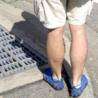 |
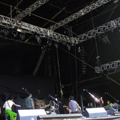 |
11:20 OOIOO @ WHITE STAGE
#一個目はボアダムズのYoshimiのバンド、OOIOO。なんだかキーボードの人がチボマットの人に似てるなと思ったら、チボマットの人でした。
メンバーが随分変わったみたいですけど、ベースの本田綾さんの指使いが何かたまらない感じでした（同行者もそー言ってた）。いや、アレはいーですよ、かなり。
ちなみにDELAWAREの人みたいですね、知らなかった。
- yoshimi p-we (vocals,guitars)
- 本田綾 (bass,vocals)
- Kayano (guitars,vocals)
- Ai (drums)
- 本田ゆか (keyboards)
|
12:40 クラムボン @ WHITE STAGE
#次はそのままクラムボン、相変わらず素敵なポップソング。
（あんまり曲知らないんだけど）インストの後にやった曲がとても気持ちよかった。
気持ちいい風が吹いてて、よく晴れてて、そんな感じが良く似合うような。
|
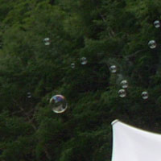 |
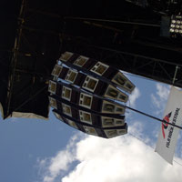 |
14:00 ROVO @ WHITE STAGE
#んで、ROVO。えーと「極星」とか「NA-X」とかやってたかな、新曲では山本精一さんが延々同じアルペジオ弾いてるのに周りが徐々にテンション上げてくよーな感じのヤツとか。
例によって例のごとく「NA-X」のブレーク後はモッシュ大会、友達のトクタケ君とか糸且谷さんとかが飛んでます（というか俺も）コレだけはやめられないですね。とりあえず「ROVOサイコー」とか言いつつWHITE STAGEを後にします。
- 勝井祐二 (violin)
- 山本精一 (guitars)
- 原田仁 (bass)
- 益子樹 (keyboards)
- 中西宏司 (keyboards)
- 芳垣安洋 (drums)
- 岡部洋一 (drums)
|
15:10 RUINS @ ORANGE COURT
#んで、ORANGE COURT目指してBOARD WALKを歩いてると横からエンケンの声がします「ムテキのオトコ～」とか言ってます。ちょっと見たかったんだけど、ぐっと我慢してオレンジのRUINSへ。
で、RUINS。フジロックでRUINS。信じられない光景。とはいえいつもと変わらぬペースで「クラシックメドレー」とか「ブラックサバスメドレー」とかやってます。大笑いして見てる人もいれば、嫌そーな顔して帰ってく人もいました。
ちなみにこの日は渋さから小森慶子さんと内橋さんがゲストで参加、内橋さんは相変わらず「グギャギャー」とかでかい音出してました。小森さんは意外とハマってて良かったなー。
- 吉田達也 (drums,vocals)
- 佐々木恒 (bass,vocals)
- 内橋和久 (guitars)
- 小森慶子 (sax)
|
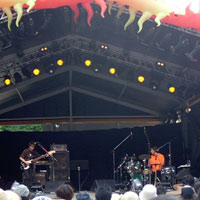 |
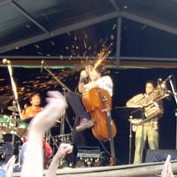 |
16:40 CICALA-MVTA @ ORANGE COURT
#ちょっと腹ごなしをしてから（カレー美味かった）シカラムータ。写真はお約束の坂本弘道さんのグラインダーチェロ。
実は初めて見るんですけど、予想以上にノリノリな感じ。ふと後ろを見ると盆踊り大会の様相を呈してたり。
- 大熊亘 (clarinet)
- 吉田達也 (drums)
- 桜井芳樹 (guitars)
- 坂本弘道 (cello)
- 関島岳郎 (tuba)
- 川口義之 (sax)
|
18:00 IMO @ AVALON FIELD
#オレンジコートではSUN RA ARKESTRAとかやってたんですが、ちょっと息抜きにウロウロしてたらAVALONの方から面白そうな音が聴こえてきて。行ってみたら渋さの室舘アヤさんがvibraphoneを演奏してて・・・IMOってこのバンドの事だったんですね。
- 室舘アヤ (vibraphone,flute,toys)
- 泉邦宏 (sax)
- おのあき (bass)
- 関根真理 (percussions)
|
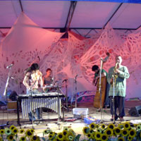 |
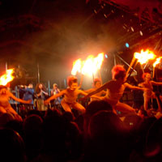 |
21:00 大豆鼓ファーム～渋さ知らズ @ ORANGE COURT
ちなみに↓のリストは渋さ新聞からパクって来たものであり、当日演奏していた人たちと必ずしも一致してるかどーかは保証の限りではないです。ってか、もっと沢山居たよーな気がします。
んで、コレばっかりはいくらテキスト書いても0.1%も雰囲気伝わらないよーな気がします。もしこのサイト見てる人で渋さ見たこと無い方いたら、とにかく一回行ってみましょう。
「祭り」とか「ハレ」とか「抑圧からの開放」とかなんでもイイですけど、ローズ（近鉄）のホームランがどこまでもどこまでも飛んでくよな雰囲気。日本人に生まれたことを感謝したくなります。
前半は「大豆鼓ファーム」の舞踏に佐々木彩子さんと渋さのメンバーが音を付けるような感じで。すでにこの時点で火を噴き、銀色の出目金が空を飛び、ダンサーの姉ちゃんの乳首は露出。
渋さ本編がはじまるまでは結構時間が有って、メンバーがちょこちょこ出て小芸を披露しててくれました。
そして怒涛の本編！だったのですが、明日の会社の為に時間切れで3曲聴いて帰りました。あーもーもーちょっと見たかったなぁ。
- 不破大輔
- 片山広明 (tenor sax)
- 小森慶子 (sax)
- 勝井祐二 (violin)
- 泉邦宏 (alto sax)
- 中根信博 (trombone)
- 広沢リマ哲 (tenor sax)
- 高岡大祐 (tuba)
- 北陽一郎 (trumpet)
- 室館彩 (flute,voice)
- 大塚猿変寛之 (guitars)
- 肥後宏 (bass)
- 佐々木彩子 (keyboards,vocals)
- 斉藤社長良一 (guitars)
- 関根真理 (percussions)
- 太田豊 (alto sax)
- 立花秀樹
- たむ
- 松
- 鬼頭哲 (baritone sax)
- 芳垣安洋 (drums)
- 渡部真一
- ペロ
- さやか
- ム－チョ赤坂
- 岡村太
- 花島直樹
- 吉田隆一 (baritone sax)
- きんたまい
- 鈴木新
- 知久寿焼 (vocals)
- 辰巳光英 (trumpet)
- 東洋組
- 大豆鼓ファーム
- 坂本弘道 (cello)
- 関島岳郎 (tuba)
- 加藤嵩之 (guitars)
- 遠藤ミチロウ (vocals)
|
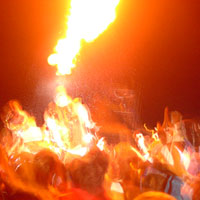 |
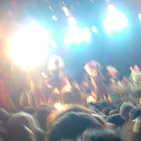 |
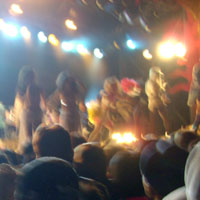 |
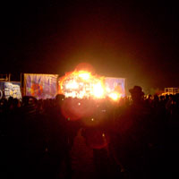 |
#まぁそんな感じ、きちんと読んでいただいた方は気付いたかもしれませんけど日本人しか見てないです。
いやそのほんとはORBとかVincento GalloとかSteve Winwoodとか見たかったんですけどね、たまにしか見れないから外人見に行くってのもちょっと不純な気がして・・・ほんとに見たいのしか見ませんでした。
フジロックの良さとか、うまく言葉には出来ないんですけど。そこに集まってる人達の作り出す雰囲気みたいなのかな。なんかね、楽しいんだよね。わざわざ苗場に行ってもいーなと思えるくらい。
|
#今年の2月に下北沢LADY JANEでやった時に予想外に面白かった（ってゆーか最高！だった）のでずーっと待ってたこの組み合わせ。今回はドラムに「じゅげむ」ってバンドのSachi-Aさんが入ってます。
一部では佳村萌+鬼怒無月+勝井祐二の3人で演奏。
この組み合わせの時は鬼怒無月さんも勝井祐二さんも、余韻を残すような流れの有るアコースティックな演奏。そこに佳村萌さんの声が入ってくると急にパッと空気が変わるような感じで。今回はHIGH-LOWSの曲を歌ったりとか（HIGH-LOWSとは全然違うモノですけど）詩を朗読したりとか。（ごめん1st setの曲ほとんど覚えて無い）
二部では最初にドラムのsachi-aさんを迎えて、ドラムと声のみでの演奏。sachi-aさんって方は全然知らなかったんですけど、しなやかな感じのドラムで、最初やってたシンバルの残響音を気にしながら叩くような演奏が良かったです。コード楽器の全く入らない形での演奏なんてなかなか聴く機会無いですけど、リズムと声とが遊離してるような微妙に絡んでるような感じが面白いかも。
「Calling You」を演奏してまた3人での演奏に戻り、「月夜のブレスレット」と
原マスミさん（会場に来てた）の「夜の幸」を演奏します。
最後にドラムのsachi-aさんも加えて、朗読と2月のライヴでもやっていた「うさぎの暮らし」ってのを演奏しました。「うさぎの暮らし」で佳村萌さんが「トゥクトゥクトゥー」とか歌う所が有るんですけど、なんだかくすぐられるように気持ちのいい感じで。
アンコールにRod StewartのSailingを演奏。鬼怒無月さんも歌ってました。
この日のライヴはやたらとMCが長くて、勝井さんとsachi-aさんが同郷で近所だった話とか。Mats&Morganのライヴの後に鬼怒さんが突発的に飢餓状態になって控え室でパン一袋食べてたとか、色々と。
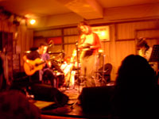
1st set
- ？
- ？
- （HIGH-LOWSの曲）
- ？
- ？
2nd set
- （聖書の雅歌から）
- 赤い花、白い花
- Calling You
- 月夜のブレスレット
- 夜の幸（原マスミ）
- ？（♪みーんなで暮らせたらいいな）
- うさぎの暮らし
- Sailing（Rod Stewart/アンコール）
- 佳村萌 (vocals)
- 鬼怒無月 (guitars)
- 勝井祐二 (violin)
- sachi-a (drums)
#MACHINE AND THE SYNERGETICのレコ発、アルバムがとても良かったんで行ってみました。全4バンドで4時間くらい・・・面白かったけど、ちょっと疲れた。
oscillator
#electronics + vocal + guitar&electronics + keyboard&fluteっていう4人組。竹村延和にちょっとノイズを足したよーな音でした。
割と好きな音では有るんだけど・・・なんかヒットは打つけどホームランが出ないみたいな・・・ボーカルの人がサルテリーみたいな楽器使ってる一瞬はとても綺麗で良かったです。
L.E.D
#えーと、drums + upright bass + guitar + soprano sax + keyboard + powerbook(macintosh) っていう6人組。複雑なベースのリフに色々上モノを載っけてく感じのバンド。ハイハットの音にエフェクト掛けたりとかしてました。
別に悪くは無いんですけど、一曲ワンコードでサビの無い感じで・・・ちょっと盛り上がりに欠けるかなと。もーちょい曲展開が有るといいなと思うんですが。
ASLN
#えーとASLNは↓のメンツに加えてguitarとdrumsとchorus×3。全然名前聴き取れず、ごめんなさい。
ROVO/DUB-SQUADの益子+中西にya-to-iにも参加してる益子ふみえさんのユニット（MCでdrumsはゲストって言ってたけど、ドラムの人抜けちゃったんだろーか？）
Weatherのコンピで聴いたときには印象薄かったんですけど、ナマで聞いたらとても良かったです。っていうか益子さんのキーボードがかなり好み（ROVOでしか知らなかったから、ちゃんとキーボード弾いてるの見るのはこの日が初）でした。
PAのせいかボーカルの音があんまり通ってなかったのが残念でしたけど、もっかい見に行きたいなと思いました。この日一番。
- 益子樹 (DX-7)
- 益子ふみえ (vocals,keyboards)
- 中西宏司 (SH101)
MACHINE AND THE SYNERGETIC NUTS
#んでお目当てのMSN。演奏1時間位でしたけど、MCも無く愛想も無く（ベースの欽ちゃんジャンプは有った）、あのゴリゴリのレコメン曲を続けて演奏。
アルバムの曲を忠実に再現するよな感じで、＋αは無かったです。（ちょっと期待度高すぎたかも）パーカッションの人がアクセントになって良かったかな。ギターの松江さん(SPOOZYS)は・・・ちょっとうるさすぎなよーな（PAのせいか？）
いやしかし昔の不良みたいなベースに、超真面目そうなキーボードに、変人っぽいサックスに、フツーの兄ちゃん風のドラムス。この人たち普段集まって話とかするんでしょうか？とか余計な心配したり。
- マヒマヒ (soprano sax,tenor sax)
- 須藤俊明 (drums,percussions)
- スズキヒロユキ (bass)
- 岩田ノリヤ (keyboards)
- 高橋結子 (percussions)
- 松江潤 (guitars)
#渋谷のON AIRのエレベータを上って行くと、そこはNESTでした。
まぁその
Abu Dhabi ver.00と名づけられたツチノコ（舞首さま）仕切りのイベントの第0回目です。
最初にヒデノブイトウさん、机の上には色々な音源モジュールが並んでます。
CD聴いた感じでは、とてもポップな感じでしたけどライヴではストイック・・というか実験的な音響。キーボードでフレーズ弾く辺りとかは何かカンタベリーを感じるような音で気持ちよかったですけど。
で、オパビニア。今回のセットでは清水さんは珍しくピアノの上にキーボード2段重ねに音源モジュールを乗っけてました。
昨日のトリオでも使ってたよーなエレクトロな変な音を重ねながらの演奏。
色んな音源持ってきたのは良いのですが、Johnson Blues終わったところで「全然うまく使えなーい」とか・・・（まぁいつもの事なよーな気も）
そして最低人では曲のブレークの所でトラブル発生、「しばらくご歓談下さい・・・」って曲のど真ん中なんすけど。
まぁ相変わらず「スゴイ演奏+スゴイ間抜けな感じ」という他に類を見ないコントラストでした。今回は曲崩して演奏する割合が多かったよーに思います。ヒョーロク玉の後とかしばらく完全にインプロやってました、オパビニアでのインプロって初めてなよーな気もしますが鬼怒無月さんのギターとかちょっとトランスみたいな感じで良かったです。
セットリストはこんな感じ・・・だと思う（間違ってたらゴメン）。店の時間の都合で残念ながらアンコールは無し。
- 情熱の通り雨
- johnson blues
- 最低人
- ふぐ汁
- ヒョーロク玉
- インプロ
- コンプトリ
- タスマニア
- 清水一登 (keyboards,piano)
- 鬼怒無月 (guitars)
- 芳垣安洋 (drums,percussions)
#えーと今回もやっぱりインプロだったんですけど、何やら清水さんは音源モジュール(?)を駆使して、変な音を一杯乗っけてました。
今まで清水さん絡みで見たインプロものの中で一番面白かったです、1st setとか「1時間の曲です」とか言われても納得しそーな感じ。演奏してる所だけ見てると、コミュニケーション出来きてるのか心配になるよーな感じですけど、出てくる音は有機的に繋がってるよな感じ。
ちなみに終演後は清水さんと鬼怒さんで、「明日のリハ」て言ってほんとにオパビニアの曲を練習してました。ちょっとお得な感じ（帰る時間が遅くなったけど）
- 清水一登 (piano,bass clarinet,口琴,sampler(?))
- 鬼怒無月 (guitars)
- 太田恵資 (violin)
#結局見に行きました。らくだ + 今堀恒雄
↓このメンツで、全然ティポグラフィカじゃない辺りがこのバンドのイイ所なのでは。
- 水上聡 (keyboards)
- 水谷浩章 (bass)
- 坪口昌恭 (keybaords)
- 林栄一 (sax)
- 佐藤帆 (sax)
- 菊地成孔 (sax)
- 外山明 (drums)
- 大儀見元 (percussions)
- 今堀恒雄 (guitars)
まぁ、そんな訳で物凄く久々に見たわけですが（前に見たのは
2000/9/2）以前見たときのセッションっぽい雰囲気は全然無くって、バンドの音になってました。ちょっとカンタベリー（National Healthとかさ）を感じるようなジャズロックでした。
特にこの日のゲストの今堀さんが前に出てきて、他のメンバーと拮抗するよーな所とか緊張感あってたまんないです。あんだけ曲溜まってるんならCD作ってくれないかな。
アンコールのアンコールで水上さんが激しくキーボードを弾いてたら、そのまんま下に落下。それを横で見てゲラゲラ笑う菊地成孔なんて場面も。
#えーと何のイベントだか未だにわかってないんだけど、清水一登さんがソロで何かやるらしーとか言う話で行ってみました。
午前1時くらいにロフトプラスワンへ行ったらDJタイム中でした、何故かこの日はタダカレーが食べられたので、カレー食べたり酒飲んだり。
んで、清水さんのソロは「Minerals」のイントロからチルアウトな感じに行くのかな～？とか思ってたら、だんだん奇怪な音が沢山になってって・・・上手く行ってるのか上手く行ってないのか（行ってなかったそーです）とにかく訳のわかんない世界へ。
中盤ではラジカセから音拾ってたマイクを取って歌いだしちゃいました、しかもこの時のキーボードの音が（どんなセッティングになってるのか分かんないけど）歪みまくってて、すげー面白い！
なんかもー最後の方はフツーな音は一つもなかったよーな感じで、近くに立ってた外人とか「クレイジー」とか言ってました。激しく同感です。
いやでも、こんな壊れた清水一登さんは久々に見たような、ほんとサイコーでした。またあんなのやってくんないかな？
そー、あと「New Type Basement Ensemble」っていう20才くらいの女の子4人のバンド（drums/marima/keyboard/cello）が
mice paradeみたいな感じで面白かったです。（ちょっとシカゴ音響系まんまなよーな気もしたり、最後の曲が仙波清彦/Jasmine Talkの曲そっくりだったりもしたけど）また見てみたいかな。
ちなみにKILLING TIMEの
Ma*Toさんが来てました、なんでも前日に「ヘビ笛」を借りようと清水さんに電話をしたとか。世の中って面白いなぁ。
#えーとin Fでのこのメンバーは、
ちょうど3年前くらい振りかな？
最初は清水さんのピアノソロ、即興って感じではなくて過去の曲を色々混ぜながらの演奏。BLIVITSとかEBIROとか最低人とかが聴こえてきたよーな感じで、あと前やった「タンゴもどき」もやってたみたい（気付かなかったが）
ピアノソロは40分位だったかな？休憩を挟まずに、向島さんと今堀さんを交えての演奏。
こー3年前のようなモノを想像してたんですけど・・・全部即興でした。まぁそのあんまりこんなメンバーでの即興は見ることが出来ないんじゃないかなと言うような感じで、かなり独特な雰囲気でした。
緊張感/テンションみたいな感じでは無くて、音を小出しにしてって取っ掛かりを探ってくよーな感じの。時折室内楽っていうか、チェンバーみたいな表情を見せてて面白かったです。こーゆーのは生で見れるのが面白い。
アンコールとして「Johnson Blues」を演奏。ですが全くのリハ無しで、譜面が向島さんが持ってた1枚しか無かった模様で、今堀さんは必死に譜面を見つめながらの演奏。それでもかなりヨレヨレな感じでは有ったけど。
終演後、少しお話聴いたけど、全部インプロで行くのが決まったのは当日だったよーで。まぁ、面白かったからいいけど、そのぉ、曲も聴きたかったかな・・・なんて。
#で、やっぱりこっちに来た訳ですが。
最初は、張+多田+Whacho+浦山という編成で舞台の為に作ったという浦山さんの曲「ルーフトップ 」を演奏。
で、最初が美尾ストリングス。
美尾ストリングス
#最初の2曲は福原まりさんの曲
「Octave」と
「fishermen tit tot/The instant fisherman」から。fishermen tit totでは良く聴いてた曲ですけど、この編成で聴くのは初めて。
その後はISSAY MEETS DOLLYからISSAYのボーカルで、3曲。最後の曲は
前見たときにも最後にやってた福原まりさんっぽい綺麗な曲。

- 森と森の間に
- ロシア鉄道
- ラストタンゴ
- ?(ROXY MUSICの曲)
- 蜃気楼の町
- 美尾洋乃 (vioiln)
- 美尾洋香 (violin)
- 福原まり (piano)
- ISSAY (vocals)
OKIDOKI
#耽美な感時の美尾ストリングスが終わった瞬間、右のステージから「ブキョー」って音がして。（この日は客席右横にもサブステージが用意されてました）既にOKIDOKIが演奏をはじめてました。ほぼ即興のインストバンドでしたけど、ときどき多田葉子さんがクレズマーっぽいフレーズを吹いたりとか。
メインステージではプロジェクターが下りて、林海象さんの短編映画をやっていました。
- 多田葉子 (sax)
- 臼井康浩 (guitars)
- 関島岳郎 (tuba,口琴)
ほとらぴからっ
#で、OKIDOKIの残響の中から続いて「重陽」のイントロが聴こえてきて、ほとらぴからっの出番。特にこの「重陽」が良かったように思います。なんか浦山さんのエコーたっぷりな感じのギターが独特でとても面白い音、雰囲気有って惹き込まれるよな感じ。
「さっちゃん」「残夢」とかはやっぱり大編成の方がイイと思いますけど、少ない編成だと一人一人がどんなミョーな音出してるかが分かって面白いかも。
ラストの「ダンスの楽園」は（やっぱり）みんな出てきての演奏。いつもよりもテンポが早い・・・こまっちゃバージョンだったのかな？

- 重陽
- 石の塊
- さっちゃん
- 残夢
- ダンスの楽園
- 張紅陽 (accordion,piano）
- 佳村萌 (vocals）
- 浦山秀彦（guitars）
- whacho (percussions)
#ここでちょっと休憩中。でしたけど休憩中も横のステージで美尾ストリングスの演奏付きでした、ライヴ居る間ほとんど絶え間なく音楽が流れてる構成。とてもイイですね。ジムノペティとかA.C.ジョビンの曲とか演奏してました。
くものすカルテット
#初めて見るバンド。真っ暗な中から何か川口浩探検隊みたいなヘッドライト付けて演奏がはじまりました。怪しいです。なんかデカイ猫のかぶりものからも光線が出てます、怪しいです。
怪しいけど、面白い・・・基本線コミカルなバンドなんですけど、ブルーグラスみたいな感じとかチェンバーな感じにも聴こえます、このバンドはまたライヴ見たいな。スイカの皮の行方も気になるし。（スイカの皮とイチジクのロマンスとか言うふざけた曲が有って、お話が尻切れトンボで終わってたの）
- 片岡正二郎 (violin,vocals,mandolin)
- 坪川拓史 (accordion)
- トーマス上原 (drums)
- 明田みの (sax）
- 渡辺好律 (wood bass)
- 平野広泰 (guitars)
#で、最後は映画監督の林海象さん（濱マイクシリーズとか、佳村萌さんの出てた「夢見るように眠りたい」と「二十世紀少年読本」とかの監督）がハーモニカを持って登場。
「上を向いて歩こう」でしたけど、今日のメンバーほとんど全員出てソロ回し大会。ほとんどお祭り。
#なんと言うか、盛りだくさんな感じで嬉しかったです。
[写真]
#ささのみちる・・・同世代の人は知ってると思いますけど、東京少年の人です。ゲストで「ほとらぴからっ」が出るってので行ってきました。
「ほとらぴからっ」での演奏は下のような感じ、メンバーは最初は佳村萌+張紅陽+whachoでしたが会場に来てた（と思われる）横澤龍太郎さんも参加。
「ダンスの楽園」では手代木さんがあのヘンテコ7拍子フレーズを一生懸命ギターで演奏・・・可笑しかったです。「ホピの犬」（確かそんなタイトル）はささのさんの曲で、可愛そうな犬のちょっと風変わりな曲。ほとらぴからっに合ってて良かったです。
- カメレオンパーティ
- 天女
- 残夢
- 重陽
- 水色
- ダンスの楽園
- ホピの犬
んで、ささのみちるさんの事。普段は「ささのみちる＆三億円」でライヴやってるみたいです（ホッピー神山+whacho+手代木で三億円、今回はホッピー抜きなので二億円）
東京少年はたぶん高校生くらいの頃に流行っていて、結構好きだったと思います。そんな東京少年時代の「原っぱのまんなかで」なんかも演奏されました。個人的にはものすごく懐かしい感じで、でもちょっとイイ歌だなとか思います。
「ぺた」っていう名前の新曲かな？元SPANK HAPPYの原ミドリさんに作曲してもらった曲だそうで。メロディーの上がって行く感じとか、原ミドリさんっぽかったです。ポエトリーリーディングみたいな曲が数曲有ったんですけど、その路線が非常に好きな感じでした。
ささのみちるさんは初めて見たんですけど「芯の強い前向きな人」を演じてるような感じかな？それが嫌な印象を与えるよーな事は無いんですけど。なんか「がんばれー」って言いたくなっちゃうような感じでした。
- ささのみちる (vocals)
- 手代木克仁 (guitars)
- whacho (drums,percussions)
- 佳村萌 (vocals)
- 張紅陽 (accordion,piano,vocals)
- 横澤龍太郎 (drums)
#タワレコのインストアライヴです。タダなのにドリンク付き、ありがとうタワーレコード様。（いつも散財してるからいいか）
この日はGOTH-TRADっていうエレクトロ/ノイズの人のライヴが先に有りました。音は大きいんだけど、曲は地味、やってる人の表情も地味。最初SPKみたいだった。「ビキョー」って音出すんなら、「ビキョー」って顔してほしいな。
東京ザヴィヌルバッハを見るのはとても久々。昔見たときは、トランペットの五十嵐一生さんがまだ居た頃でした。坪口さんの「Ｍ」が動いてるマシンもその時はSE/30だったはず・・・
音の方は昔とはそんなに変わってなくて、「Ｍ」から出てくる変なリズムの上を坪口さんのキーボードと菊地さんのサックスで上げたり下げたり。後半は珍しくわかりやすいリズムで盛り上げてくれました、サービスかな？
久しぶりに坪口さんのキーボードの音をじっくり聴けたんですけど、この人の音色/フレーズはかなりツボで聴いてて気分良くなります。ほんとにジョー・ザヴィヌルよりも好きかも。
- 坪口昌恭 (keyboards,macintosh)
- 菊地成孔 (sax,CD-J)
#待望の
アルバム発売ライヴです。吉祥寺MANDALA-2へ・・・・って、
すっげー混んでる。前回の
桜木町でのライヴの3倍以上入ってる。素晴らしいー、でも狭いー。
客席にはいつも良く見る方たちの中に、ほとらぴからっの佳村萌さんや、横澤龍太郎さんなんかも来ていました。
そんなわけで、待望のレコ発ライヴです。「今日はレコ発ライヴと言うことで、アルバムに入っている曲全部やります」と。
アルバム中一番ストレートな曲「コンブトリ」からスタート、さすがにレコーディング後なので安定した演奏になってます。かっちょいい。
流石にバンマスなだけあって、珍しく清水一登さんが沢山喋ってましたが、なんというかほとんど前後不覚な感じで可笑しかったです。（というかコンブ取りのテーマソングって何だ？）
前半のセットはこんな感じ、3曲目のインプロはアルバムの「Crunchy brains」に相当する曲だそーで、当然全く違うインプロでした。

- コンブトリ
- ふぐ汁
- インプロ (Crunchy brains)
- (Slight) Googli-Moogli
- 最低人
#休憩を挟んで、2nd set。「Pre-cambria dreamin'」以降は向島ゆり子さんを加えての演奏です。
前回は演奏しなかった、「BLIVITS」も演奏してました・・・嬉しいんですけど、最近この曲崩しすぎなよーな気も。
あと、「ヒョーロク玉」はオパビニアで演奏されるのは初めてのような気が（清水+鬼怒+向島とかでは演奏してた）。鬼怒無月さんのギターのトーンが気持ちよい、構築系のゆったりとした曲。
「BLIVITS」を演奏するのは、久々じゃないかな？ここでは清水一登さんはバスクラを演奏してました、中間部はほぼ別の曲と化してますが。
アンコールで「何やりましょうか～」とか言ってる時に何故か鬼怒無月さんがKing CrimsonのFractureとか弾いてました。いやーそのこのメンツで完コピしても面白そーだなぁなんて事を不謹慎にも思ったんですけど、結局アンコールには「Pre-cambria dreamin'」をもう一度演奏していました。

- 情熱の通り雨
- Johnson Blues
- Pre-cambria dreamin'
- ヒョーロク玉
- BLIVITS
- Minerals～Tasmania
- Pre-cambria dreamin' (アンコール)
そんなわけで、次回は7/3の渋谷7th floorだそうです。行くべし。
- 清水一登 (keyboards,piano,bass clarinet)
- 鬼怒無月 (guitars)
- 芳垣安洋 (drums,percussions)
- 向島ゆり子 (violin)
nino tronica
#えーとなんだか快適な感じのヨーロッパっぽいバックの音楽。結構好きです、ボーカルのキャラ作りだけ除けば。
Chacoってシンセサイザーズじゃなかったっけな？まぁ何か突出した所の有るバンドじゃないような気もしましたけど、アコーディオンの人なんか結構面白かった。
- 角森隆浩 (vocals)
- 鹿島達也 (bass)
- 清水ひろたか (guitar)
- HONZI (violin,vocals)
- Chaco (drums,vocals)
- YASSY (trombone)
- Alan Patton (accordion)
- 上田禎 (piano)
ISSAY meets DOLLY
#このバンドは元DER ZIBETのISSAYと福原まりさんの新ユニット、今回のライヴではバイオリンに美尾洋乃。ベースにDER ZIBETのHAL。ドラムは元PINK,UPLMの矢壁篤信でした。
いつも自分が行くよーなライヴと違って、なんつーか妙齢の女性が多いです。皆様の視線はISSAYさんに釘付けだったよーで。
何が不安って、ビジュアル系そのまんまな音楽だったらどーしよーかと思ってたんですけど、1曲目からドアーズの「Arabama Song」、大丈夫コレなら聴ける。
曲はたぶんほとんど福原まりさんじゃないかなーと思うような、ピアノの進行が特徴的な曲ばかりでした。今回のバンドではエレピのみの演奏で、結構アグレッシブに弾いてました。
美尾洋乃さんはelectric violinで、今堀さんなんかとバンドをやってた頃の金子飛鳥を思わすようなキレっぷりでした。矢壁さんとHALのタイトなドラムも併せて、想像してたよりも楽しめました。まぁそのボーカルの歌い方自体は見た目を裏切らないような感じで・・・あまり好きではないんですけど。
最後の曲なんかは、福原まりらしい映画のサントラみたいな三拍子の綺麗な曲で、とっても良かったです。シングルCD出すときは是非ともカラオケバージョンを付けて欲しい、なんて言ったらISSAYファンの人には怒られるんだろうか。
- ISSAY (vocals)
- 福原まり (piano)
- 美尾洋乃 (violin)
- HAL (bass)
- 矢壁篤信 (drums)
#んで、清水一登/佐藤正治加入のヒカシュー初ライヴです。自分的にはヒカシューを見るのはDRIVE TO 2000のイベント以来です。
曲名はかなり適当（ヒカシューのCD全部は持ってないの）最初はちょっと控えめなよーな気もしましたけど、後半から気合が入ってきた感じで良かったです。「ビロビロ」のサビ(?)に突入する所なんか、カタルシスって感じでした。
新規加入のお二人は初ライヴとは思えないほど溶け込んでました。自分は清水一登ファンなのでどーしても贔屓な感想になりますが、今までのヒカシューに有ったちょっと平面的な感じが、清水さんのキーボードが入る事で立体的な感じになって、妙な曲がさらに引き立つような気がしました。ちなみに佐藤さんのパーカッションも良いアクセントでした。
このメンバーで演奏される、清水さんの曲ってのも聴いてみたいな。ちなみに次回は7/11(tue)、やっぱり吉祥寺STAR PINE'S CAFEにて。
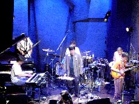
- 丁重なおもてなし
- ?
- マスク
- デジタルなフランケン
- ?(なんか朗読とインプロみたいなの)
- ?(ハイハイハイ～)
- ?(入念)
- 恋とガスパチョ
- さなぎ
- ?(インプロ?)
- ?(ラヴ・チケット)
- ビロビロ
- ?
- うわさの人類
- プヨプヨ (アンコール)
- (インプロ)
- 巻上公一 (vocals,trumpet,thermin)
- 三田超人 (guitars)
- 坂出雅海 (bass)
- 新井田耕造 (drums)
- 清水一登 (piano,keyboards,bass clarinet)
- 佐藤正治 (percussions,voice)
#えーと開始直前にin Fに着いたら、例によって例の人の姿が見当たりません・・・「とりあえず始めようか」みたいな話になったタイミングで、太田資恵さん登場。（なんか俺が見るとき、いっつもこんなタイミングですが）
内容は、ほぼインプロ合戦。なんだかいつにも増していーかげんなよーな感じの（いやけなしてる訳ではなくて・・）
ピアノの中に色んなモノを入れてプリペアドっぽい事してたら、何かが取れなくなっちゃったりとか。トホホ感が普段の二割増くらいかな。ライヴ中にテレビを付けてるのは生まれて初めてみました。
ちょこちょこ新大久保ジェントルメンな曲とかもやってたりしてました。「Belfast」（この曲好き）とかも。
でも、もうちょい新大久保ジェントルメンとは違ったよーなのも聴きたかったかなぁ。
- 清水一登 (keyboards,bass clarinet,voice)
- 梅津和時 (sax,clarinet,voice)
- 太田資恵 (violin,voice)
#えーと、去年は
Samla Mammas Mannaで、一昨年は
Lars Hollmer's SOLAで、3年前の
日本座村と、もはや毎年恒例になりつつ有りますが、Lars Hollmerの来日。
諸般の事情で7:30位に会場に行ったら、やっぱりはじまってました。set listはちょっとわからない（スウェーデン語の曲名がどーしても覚えられない）のですが、
アルバムからの曲中心のセットでした。
前回2回と違うなーと思ったのは、よーやくバンドの音になったなぁーという所。「曲を忠実に再現する」って所から、更にその曲の中でちょっと崩してみたり、遊んでみたりするよーな余裕が出てきたんだと思います。スウェーデンでのツアーの成果かしら。
お約束の坂本弘道さんの、火花チェロも炸裂してました。逃げる向島さん、逃げられない吉田さんとLarsの姿が可笑しかった。
清水一登さんはやっぱり曲の骨格を支えるような感じで、ベース音を主に担当してました。担当してましたけど、今回は結構あちこちで遊びを入れてるよーな感じで、清水一登ファンとしても満足。
やっぱり行けて良かったです。（翌日弟に借金したが）
- Lars Hollmer (keyboard,accordion)
- 向島ゆり子 (violin,toy piano)
- 吉田達也 (drums)
- 清水一登 (keyboards)
- 大熊ワタル (clarinet)
- 伏見蛍 (guitars)
- 坂本弘道 (cello)
feep
#えーと
大島輝之さんって方のバンドのようです。drumsは
phatの沼直也さん。サイトは恐らく
こちら
左手でディレイをいじりながら、その音にきっちり合わせてくドラムの音もすげーと思いましたけど、特に耳を引いたのはギターの方の音。なんかとても独特なセンスを感じました。
バンドの音としてはストイックな感じというか・・・フツーのロック的な盛り上がり方とかは皆無なんですけど、独特な緊張感の出し方をしてました。mice paradeとかsoftsの5とか。
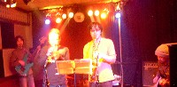
- 大島輝之 (guitars)
- 沼直也 (drums)
- BUCHI (trumpet)
- FUKUDA (bass)
- 大谷能生 (sax)
G.P.N.Z.
#んでこっちは（ていうか知り合いの居るバンドですが）、ロック的というか、わりとわかりやすい盛り上げ方をするような感じ。（
サイトはこちら）前回欠席だったsaxの音がかっちょ良かったです。ちょっとギターの音のバランス悪かったかな？
まぁ完成度というところだとfeepの方が上なんですけど、曲の作りとかはこちらの方が好みだったりもします。フリーっぽい所からキメフレーズに入る所とかかっちょいいです。
- 谷田部晃功 (bass)
- 山田大輔 (guitars)
- 澤野遍 (drums)
- 堀越裕 (conga)
- 江村幸博 (sax)
- 皆川将志 (trumpet)
#てなわけで大友良英さんのサントラ、
「blue」の発売イベントです。（
イベントのページ）
まず最初に
映画の安藤尋監督、映画のプロデューサー宮崎大さん、大友さんでの対談から始まりました。飛ばします。
#で、メンバーが出てきて大友さんの過去の映画音楽を総ざらいするような内容のライヴ。曲目は以下のような感じ（たぶん）
叙情っていうか、確か大友さんもこの場で言ってましたけど非常に「うた」を感じるような曲がとても多いです。あとNHKの番組の音楽をやったらテロップに名前が載って、ここ数年音沙汰の無かった親戚から沢庵が送られてきたとか。
最後は
山下毅雄を斬るから「煙の王様～Song for T.Y.」、個人的にはコレを聴きに行ったんです。秋岡歐さんのbandolinの音から、徐々にサイン波の音の洪水に変わっていく曲（個人的にはこの曲聴いて、大友良英の印象が変わった）
まぁスタジオ盤の完全再現って訳には行かなかったですけど、かなりトリップさせられました。会場のまわりの客も口々に「スゴかった～」とか。
- Cherry Blossam (風花)
- 風花のテーマ (風花)
- 青い凧のテーマ
- 女人、四十のテーマ
-
-
- （サモハンが途中で死ぬ映画の曲）
- （NHKの番組の音楽）
- 煙の王様
- Song for T.Y.
- 大友良英 (guitars)
- 秋岡歐 (bandolin)
- 水谷浩章 (contrabass)
- 高良久美子 (vibraphone)
- 栗原正己 (recorder)
- Sachiko M. (sine wave on 'Song for T.Y.')
#この後DJタイム。ちょっと混み過ぎで疲れてて、隅っこ行って体育座りしてました。弟と一緒に。
#ここからまた「blue」バンドということで、登場しましたけど・・・前の方ぜんぜん見えませんでした。えとうなおこさんを見たかったんだけど、人の山しか。
「blue」とか栗原さんのリコーダーとキーボードの音のユニゾンが印象的で、大友さんのギターの音は
ONJQみたい。芳垣安洋さんのトランペットがなんだか必死な感じで凄く良かったです。
あと、昔の安藤尋監督の映画の音とかはNOVO-TONOとかみたいな、割とわかりやすいアバンギャルドなロック。これはこーゆー機会でないとやらないだろうなぁ。
「painting」では女優の市川実日子さんとか監督さんとか沢山出てきて、パーカッション類を叩いていました。ベテランな人たちから出てくる完成度の高い音を突き崩すよーな、プリミティブな音の塊で面白かったです。（よっぽど気に入ったのか、アンコールにも無理矢理出てもらってた）
- blue
- ピアスのテーマ
- dead beat
- （ドラムンベースみたいなの）
- painting
- 海 (the sea)
- blue
- 大友良英 (guitars)
- 栗原正己 (recorder)
- 西村雄介 (bass)
- 芳垣安洋 (drums)
- えとうなおこ (keyboards)
#ちなみにこの日、大友さんが妙にテンション高くて饒舌だったのは、珍しく女性客が多かったからだとか・・・なるほど。
#いやぁもう、なんつうか。ほんとにロンリーな感じ。
新大久保ジェントルメンのライヴです。はじめて見るんですけど。
物凄く久々のライヴなハズなんですが、なんか3人しかいません。抜けた穴を埋めるつもりか、3名の足元にはパーカッション類が転がってました。
一曲目「AYAM」では
フツーにドラムとベースとパーカッションを抜いたバージョンって感じで・・・ああぁぁぁ。まぁその後は即興とか「オタのトルコ」とか「イゴールの嘆き」とか新曲(?)とか色々。とりあえず皆様自分のメイン楽器以外にパーカッションをボコスカ叩いてました。梅津・・・じゃないやグレートの足元からゴミ箱叩いてるような、ボコッとした音が聴こえるなと思っていたら、それはゴミ箱であることに、ライヴの後半にグレートがゴミ箱被った所で気付きました。
結構な頻度で清水・・・もとい、イゴールが「あぁぁ」とかため息を漏らしてました、アブドゥール曰く「コノバンドノ・メンバーガヌケテイクリユウガ・ヨクワカル」だそうで。
えぇぇと、とにかくゆる～い感じで、半ばコミックバンドと化してました。まぁ別につまんなくはなかったんだけど、「Belfast」のイントロとか外しちゃならんだろー？なんて。
- グレート金時 (sax,clarinet,percussions,vocals)
- イゴール (keyboards,piano,percussions,vocals)
- アブドゥール・ワハハ (violin,percusions,vocals)
#今回は月曜だったので、若干客が少ないかなーとか思いましたけど、始まる頃にはけっこう客席埋まってました。斎藤ネコさん（中国に行ってるらしい）の代わりに向島ゆり子さんを加えてのライヴでした。
「運命の出会い」から「残夢」までは続けての演奏、新曲（「ごっ」って新しい曲の5個目だって）は、マーチみたいなリズムと印象的なメロディーのバックの上で佳村萌さんが朗読してます。
言葉にはリズムが有るってのを目の当たりにした感じの曲、も・の・す・ご・く・よ・か・っ・た です。
この辺からなんだか急に良くなってきた感じで、向島ゆり子さんの滑らかなバイオリンの音とか、なんか凄いモノ見てるような気がしてきました。思い出すだけで気持ちよくなってくる。
「水色」は聴いたことが有るなーと思ったら、UA/11に入っているめいなCo.の曲。随分印象が違うような。
とにかくこの日は充実してる感じで、復活してから6回目のライヴになるんだと思いますけど、よーやく完全体になったっていうか。もうこのままCD出してもらいたいなーとか思っちゃいます。
前のライヴの時にもこのページに書いたかも知れないですけど、メンバー全員バラバラな癖（っていうか個性）を発揮しながら、「ほとらぴからっ」って音に収束してるよーに思いました。好いバンドだなーと思います、ほんとに。
セットリストは確かこんな感じ（抜けてるの有るかも？）
- ダンスの楽園
- 天女
- フラミンゴ
- 痛い時間
- バレエダンサー
- 運命の出会い
- ごっ（新曲)
- うめよ (新曲)
- 残夢
- 水色
- 2022年の七夕まで
- 初恋のあとのあと
- 海ざる
- さっちゃん
- 佳村萌 (vocals)
- 張紅陽 (accordion,keyboards,vocals)
- 近藤達郎 (harmonica,clarinet)
- 向島ゆり子 (violin)
- whacho (percussions)
- 浦山秀彦 (guitars)
- バカボン鈴木 (bass)
- 横澤龍太郎 (percussions)
#またしてもNHKライブビート。この日は2バンド収録で、最初に
NAHTってバンドでした。
guitar/guitar/vioiln/bass/drumsって編成でしたけど、バイオリンの音がギターの音で殺されちゃって勿体無かったかな（特に最初は全然バイオリンの音聞こえなかった）。曲調はドラマチックなハードコア。そんなに嫌いじゃないけど、次のバンドと較べちゃうのはちょっとかわいそう。
ま、そんなわけでコレを見に来た訳です。
カルメンマキ with サラマンドラ（UNIT-Cをやめてコレが正式名称みたい）一昨年の年末に渋谷のクロコダイルで一回見てるんですけど、その時よりも随分バンドの音になってきたよーに思います。個人的には松永孝義さんのベースが良かったです、あの人がきっちりベースらしいベースを弾いてるおかげで、ギターとバイオリンが暴れられるんだな―とか。
1曲目からマキさんの歌は物凄い存在感。「Over The Rainbow」ではキッチリしたビートの上でちょっと即興風味でした、面白い演奏。2曲目（曲名わからん「醒めない夢～」とか歌ってた）とかも良くって、なんか古い/新しいとかじゃなくって、普遍的なモノを感じます。
4曲目の「変わらないもの」ってのは勝井祐二さんの曲だそうです。勝井さんの書いた歌モノの曲って初めて聴きましたけど。
終わったかと思ったら勝井さんが出てきて「NHKの人にはやらないって言ったんですけど・・・やってもイイですか？」とか言って、もう一曲。このアンコールの曲がとてもハードロックしていてて（曲名わからんかったけど）滅茶苦茶かっこよかったです。鬼怒さんマイク無いのに思いきり歌ってて面白かった。
ほんととにかく
良いバンドって思いました。このメンツで4月に録音するらしいです、出たら買いっす。
- Trick Star
- ?(醒めない夢)
- Over The Rainvow
- 変わらないもの
- Lilly was gone with window pane
- 世界の果ての旅
- ?
- カルメンマキ (vocals)
- 鬼怒無月 (guitars)
- 勝井祐二 (violin)
- 松永孝義 (bass)
- 芳垣安洋 (drums)
#stmさんにチケット取ってもらいました。整理番号310で会場に遅く入ったら、既にボンデージフルーツが始まってました・・・・まだ入場待ちしてる人いるのに何で演奏始まってんだよ、何考えてんだ？
まぁそんな訳で、Bondage Fruitを見るのは去年の年始以来かな？ほぼ一年ぶり。えぇと一年ぶりなんですけどまたかなり音が変わってました（この日はドラムが岡部洋一でなくて芳垣安洋だったってのも有るかも）なんていうか、Warehouseの音から逆にフィードバックが有ったような感じのフックの多い感じが印象的でした。（特に2曲目）
4曲目は3枚目のアルバム収録のとにかく弾きまくりの曲、自分のいる所からはステージ見え無かったんですけど、かなり気合入りすぎだったようです。
- (新曲)
- ?
- ミニマル
- Frost and Fire
- 鬼怒無月 (guitars)
- 勝井祐二 (violin)
- 高良久美子 (vibraphone,drums)
- 大坪寛彦 (bass)
- 芳垣安洋 (drums)
#んで、待望のMats&Morganです。
えーと曲目はちょっとわかんない（CD1枚しか持ってないし）んでしたんで、
TAKEさんの所のライヴレポ見て頂けるとイイかも。（すんません）
とーにかく、「ポップなフレーズを物凄いスピードで変拍子」っていう。ザッパのシンクラビア作品を生で演奏しちゃったよーな物凄いモノでした。とにかく圧倒されます。
んでステージ後方から演奏してる姿が少しだけ見えたんですけど、この人たちこの変態音楽をニコニコ笑いながら演奏してます、Matsは椅子の上でクルクル回ってます。ヤバ過ぎです。ていうかよーく見てみると譜面が有りません（Mats Obergは盲目だからイイとして）あのキメばっかしの曲を全部暗譜ですかあなた達、
そんなバナナ。
とにかくドラムの音がスッコンスココンと抜けてて、非常に聴いててキモチが良かったです。メンタリティ的にはプログレメタルに近いのでないかとも思いましたけど、踊れる感じのリズムで。
アルバムのMatsサイドには、ビートルズを感じさせるな奇妙なポップソングも有ったんですけど、今回の公演では歌モノは有りませんでした。そっちもちょっと聴いてみたかったんだけど。
- Mats Oberg (keyboards)
- Morgan Agren (drums)
- Jimmy Agren (guitars)
- Robert Elovsson (keyboards)
- Tommy Thordsson (bass)
来日の時の写真が
こちら(POSEIDON内)に。
あーあとやっぱり集まる所には集まるもので、
かおりんさんとか
belleさんとか
むちょさんとか。あとどっかで見た人たち沢山（すまん）。
#てなわけで、再びNHK。今度はROVOです。しかも今回はゲスト広瀬淳二。
1-3はROVOのみで、1は四月に発売になる
鉄腕アトムトリビュート[Electric-Brainfeaturing Astroboy]の曲です。最近では珍しい割とフラットな感じの曲。
2.3.はflageから、「Na-X」では山本精一がダブっぽいギターを弾いてました。しっかしこの曲かっちょいいなぁ、NHKじゃなかったら前の方に突っ込んでくんだけど。
バックはVJ付き、どーもあの宇宙空間飛んでるっぽいVJ見るとNIK TURNER'S HAWKWINDの来日を思い出しちゃいます。ROVO好きの人には受けると思うんですけど、日本じゃ全然人気無いみたいです。あぁ。
んで、ゲストの広瀬登場。なんかかちょっとFUNKっぽい感じで、山本精一もROVOでは珍しくザクザクした感じのリフを刻んでました、ちょっと昔の(1997年あたりのPONとかBONDAGE FRUITとか)この辺の人達のライヴっぽい音を思い出します。ただちょっと今のROVOの音とは違う感じでしたけど、良くも悪くも。
なんだかアンコール有りで、広瀬淳二さんも加えて「極星」（たぶん）をやってくれました。この曲の方は広瀬さん違和感無くはまってる感じでした。
- (鉄腕アトム トリビュートの曲)
- Sukhna
- Na-X
- ROVO+広瀬淳二セッション
- 極星(+広瀬淳二)
- 勝井祐二 (violin)
- 山本精一 (guitars)
- 益子樹 (synthesizers)
- 芳垣安洋 (drums,percussions)
- 岡部洋一 (drums,percussions)
- 原田仁 (bass)
- 中西宏司 (synthesizers)
- 広瀬淳二 (sax)
#
NHK-FMライブビートって番組の公開収録です、往復はがきを出して見に行ってきました。つまり、タダっすよタダ、素晴らしい。ちなみに次回の収録はROVO+広瀬淳二、その次がカルメンマキ with サラマンドラ(芳垣+勝井+鬼怒+松永)ですよ。思わず受信料払いたくなってきます。
で、今回のVincent Atmicusは芳垣さん率いる大編成バンド。メンバーは見ていただければ判りますが、アノ辺です。tipographicaが3人、bondage fruitが3人、ONJQが3人、ROVOが3人、DCPRGが2人・・・などなど。
こないだ出たアルバムから1時間ちょっとの演奏でした。やっぱり思ってた通りライヴだとかっちょいーです、太田恵資さんの前あたりに居たんですけど、やっぱこの人の演奏がキレててかっちょいい。沢山の楽器とリズムがエスニックな感じに混じってて面白かったです。
「大建設」の途中では左側バンド(高良+太田+青木+芳垣)と右側バンド(岡部+水谷+菊地+松本+勝井)が数小節ずつ交互に漫才の掛け合いみたいに演奏してました、可笑しい。
そういえば水谷さんが2曲目の一人だけ違うリズムのベースラインを弾きながら何かずーっと口を動かしてました。変拍子のリズム取るのにその拍子の数の単語を喋るってのは聞いた事有るんですけど（7拍子だったら「たかしまだいら」とか）何て言ってたんだろう。
- 眠れぬ夜のために
- 生姜煙草を吸いながら
- 大建設
- "魚鳥"とフデルトヴァッサーの家
- ムギの踊り
- キノ
- 芳垣安洋 (drums,trumpet,percussions)
- 青木タイセイ (trombone,bass)
- 松本治 (trombone)
- 菊地成孔 (sax)
- 勝井祐二 (violin)
- 大田恵資 (violin)
- 水谷浩章 (bass)
- 岡部洋一 (percussions)
- 高良久美子 (vibraphone,percussions)
#意外な取り合わせに「どんなのやるんだろーなぁ？」とか思って行きました。ほとらぴからっとは違った雰囲気でなんていうか雲の中にいるみたいな雰囲気の音楽。
勝井さんと鬼怒さんのバックはちょっとジャーマンロック的(M.GottschingとかTangerine Dreamとか)みたいな感じでフワフワしてて、佳村萌さんが童謡みたいな絵本みたいな詩を歌ったり語ったり。
ほとらぴからっの曲をやるのかなーと思ってたんですけど、最後に「カメレオンパーティー」(ほとらぴからっとは全然雰囲気の違う)をやっただけでした。
後半は即興っぽい音だったんですけど、あんなに柔らかい感触の即興を聴いたのは初めて。
編成とか雰囲気とかJuana Molinaにも似ているような感じでしたけど、個人的にはこっちの方が全然上。ほんとサイコーでした、行って良かった。
- 佳村萌 (vocals)
- 鬼怒無月 (guitars)
- 勝井祐二 (violin)
#ひさしぶりのアレポス。ですが、曲名よく覚えてなくて順番テキト―です、ごめんなさい。コレ以外にも知らない曲とかやってました、××の湖とかそんな感じのタイトル。
清水一登好きとしてはどーしてもピアノの方に耳行っちゃうんですけど、「HOMEWARD」とか「セレナーデ」とか聴いてて、メロディーの魅力をちょっと再発見した所が有りました。あと「Welcome」のコーラス部分が余りにも
Hatfield and The Northで可笑しかったです。
あ、渡辺等(bass)抜きのアレポスって多分初めて見たんですけど、音足りないなぁと感じる部分も有れば、ピアノ＋歌って編成が新鮮に聞こえる所も。まぁでもやっぱり居た方がいいなぁ。
MCは相変わらず、ザッパの話とかピンクパンサーがどうとかそーゆー。で
おUのCD買いました。おUのライヴは（もし、演るとして）5月以降らしい・・・。
- それそれ
- Ab Dance
- An English Country Garden
- PLINK
- RAINY RAG
- Waltz #3
- 遠足
- Welcome
- HOMEWARD
- Ballad #1
- Ballad #2
- セレナーデ
- 深海のワルツ
- RONDO
- おやすみ
#考えてみたら、2003年入って最初のライヴハウス・・・ではないな。その前に友達のライヴ行ってるか。
そんな訳で去年復活した「ほとらぴからっ」です。去年の梅津和時さんのFESTA IN VINYLと一緒のメンバーで、ベースはバカボン鈴木さんでなく松永孝義さんです。
いきなり1曲目「フラミンゴ」から、ソロ回ししてメンバー紹介してました。なんかいきなりクライマックスな気分ですが、その後はいつもと変わらずミョーな感じの演奏。大好きな「海ざる」での浦山秀彦さんのロバートフリップみたいなギターとか。
曲順はたしか大体こんな感じ。
- 石の塊
- フラミンゴ
- 海ざる
- 痛い時間
- 天女
- バレエダンサー
#と、ここで休憩。「バレエダンサー」ってのは梅津和時さんの曲らしく、重厚な感じの綺麗な曲。今回は張紅陽さんのピアノの頻度が高くて嬉しかったです。
気付くと梅津和時さんと鬼怒無月さんが客席にいました、他にもなんだか関係者率高そうな客層でした。
- 花子さんの場合
- ダンスの楽園
- 初恋のあとのあと
- カメレオンパーティー
- すきま
- 残夢
- 2022年の七夕まで
- 重陽
- さっちゃん
#アンコールは「重陽」と「さっちゃん」。やっぱり「重陽」ってイイ曲だな―と、聴くたび思います。空気の色変えるよーな感じ。
なんかMCとか、いつも自信無さそーな感じですけど、いつも十分たのしいライヴです。
次回は3/3。あとその前に2/9に佳村萌+鬼怒無月+勝井祐二が（これもどんなんなんだろう？）
- 佳村萌 (vocals)
- 張紅陽 (accordion,piano)
- 斎藤ネコ (violin)
- 浦山秀彦 (guitars)
- 横澤龍太郎 (percussions)
- whacho (percussions)
- 松永孝義 (bass)
#そいや440ってライヴハウス初めて行ったけど、2チャージも取るなよ。